文字
背景
行間


校長花ごよみ
桜のある風景4（令和２年）
３月24日（火）今日は寒の戻りで非常に寒い朝になりましたが、天候は晴で澄んだ青空が広がっています。やはり桜の花は青空を背景にすると一段と映えますね。
今日の写真は、正門付近から地域交流棟回りと西門近辺から学思館脇のテニスコート周辺の桜の状況をお伝えします。
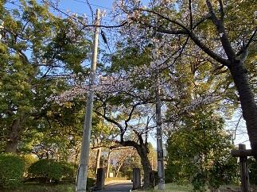


今日の写真は、正門付近から地域交流棟回りと西門近辺から学思館脇のテニスコート周辺の桜の状況をお伝えします。
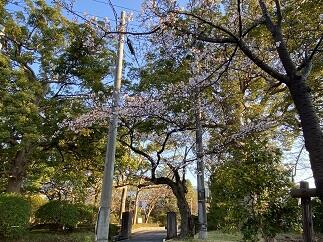
桜のある風景3（令和2年）
3月23日（月）の朝は、あいにくと曇り空で時折、小雨がぱらついています。昨日は、東京など一部の場所では夏日を記録したようですが、春分の日からの3連休中の暖かさで、佐倉高校の桜も一気に開花しました。咲いている場所や桜の種類によって多少違いはあるものの見事に濃淡様々なさくら色の花を誇らしげに咲かせています。
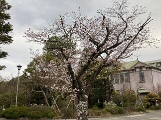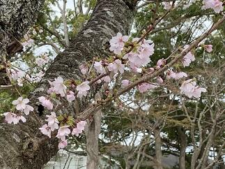

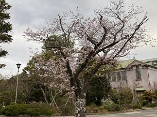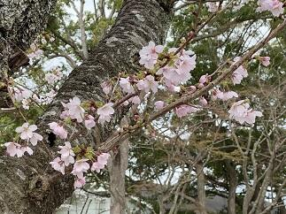
桜のある風景2（令和2年）
一気に暖かな春の兆しが見え始めました。校内のソメイヨシノなどの桜の蕾が開花直前となってきました。遠目には木々の枝が赤く色付いているように見えます。
写真は、正門を入ってすぐに目に入る桜の木と駐輪場脇の桜の外観と蕾の様子です。

 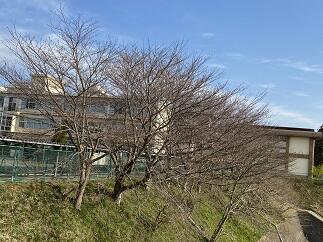
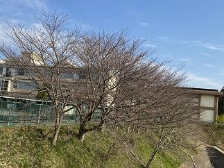
写真は、正門を入ってすぐに目に入る桜の木と駐輪場脇の桜の外観と蕾の様子です。
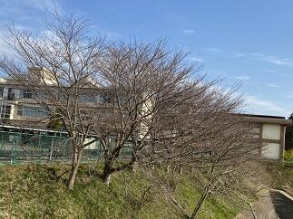 桜のある風景1（令和2年）
駐輪場とテニスコートの法面を隔てるフェンスに沿って植えてあるソメイヨシノの桜の蕾がかなり膨らんできました。今週から来週にかけて開花するものと思われます。また、記念館脇にあるシナミザクラはとても綺麗に咲いています。
 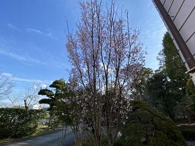
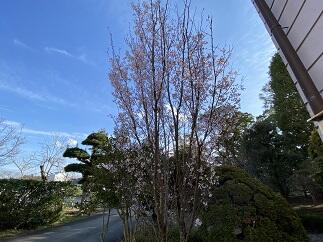
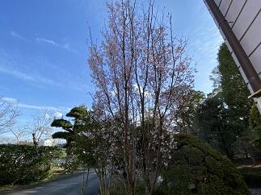 台風の爪痕からの復旧
昨年の台風15号、19号や大雨による被害から半年が経とうとしていますが、未だ復旧できていないところも多いと思います。本校も、まだ多くの爪痕が残っていますが、年度末までに復旧に向けて整備を進めているところです。今日は、記念館の中央の最上部にある大塔の屋根の修理の為の足場が組まれました。また、第2グランドの防球ネットで外れていた部分を元に戻しました。更に、駐輪場とテニスコートの法面を分けるフェンスも土台から作り直していただいて新品のフェンスになりました。新年度には、きれいに整備された学校に戻ってこれると思います。


佐倉の桜その３～その１
(その３) 2月25日から国公立の第2次試験が多くの大学で行われています。佐倉高校では千葉県公立高等学校後期入学者選抜の願書受付日です。無事に試験や検査が行われることを願います。
学思館横の河津桜は7分咲きで道路からも鑑賞できるほど程良く咲いていてとても綺麗です。（写真）
→（その２）2月19日、(その１) ２月17日の状況は写真下の ＞＞続きを読む をクリック


学思館横の河津桜は7分咲きで道路からも鑑賞できるほど程良く咲いていてとても綺麗です。（写真）
→（その２）2月19日、(その１) ２月17日の状況は写真下の ＞＞続きを読む をクリック
(その２) ２月19日は公立高校の前期選抜の結果発表日でした。天候に恵まれ穏やかで、日差しが暖かい日でした。
学思館横の河津桜は三分咲きといったところです。
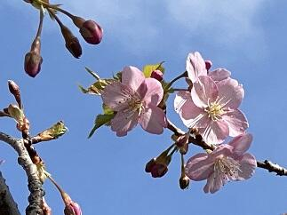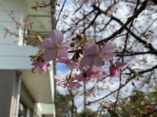
(その１) ２月17日は学思館の横の河津桜が咲き始めたのでお知らせします。多くの蕾が濃いピンクに色づき膨らんでいます。このところの暖かい気候に促されて咲く準備が一気に整って来たようです。受験生の皆さんにも良い知らせが届くことを期待しています。


学思館横の河津桜は三分咲きといったところです。
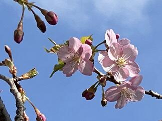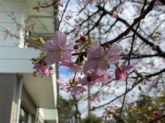
(その１) ２月17日は学思館の横の河津桜が咲き始めたのでお知らせします。多くの蕾が濃いピンクに色づき膨らんでいます。このところの暖かい気候に促されて咲く準備が一気に整って来たようです。受験生の皆さんにも良い知らせが届くことを期待しています。
立春大吉（庚子）
本日（令和2年2月4日）は立春です。暦の上では春です。立春を始めとする二十四節気の節気は、太陽の角度や動きにより、天文学的に決められています。太陽黄経が315度になった日が立春です。とは言え、この時期は1年でももっとも寒い時期でもあります。通勤途中の朝の冷え込みは厳しく暖冬の今年でも久しぶりに氷点下でした。そんななか、桜の蕾の様子を見ると春の訪れに向けて着実に準備が進んでいることを感じます。受験生の皆さん春はすぐそこです、頑張ってください。
（写真 左：山茶花と河津桜の蕾 右：校長室で開花した河津桜）


（写真 左：山茶花と河津桜の蕾 右：校長室で開花した河津桜）
節分（庚子）
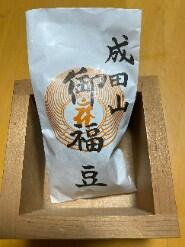本日は、節分です。節分の日には、一年の厄を払うために「豆まき」を行うのが最も一般的ですが、令和に入って初めての節分ですから、ニュースによると各地とも例年にもまして、多くの神社仏閣で有名人等による「豆まき」が行われたそうです。私が小学生ごろはどこの家でも豆まきが行われていたように思います。「福は内、鬼は外」という元気な声がここかしこで響いていました。
最近は、豆まきと併せて、恵方巻き（太巻き）をその年の恵方（方角）に向いて丸かぶりする風習も全国的に行われていますが、今年は庚の年なので,恵方（めぐみのかた）は西南西です。皆さんの健康と益々のご活躍を祈念いたします。
受験生の皆さん頑張ってください。
最近は、豆まきと併せて、恵方巻き（太巻き）をその年の恵方（方角）に向いて丸かぶりする風習も全国的に行われていますが、今年は庚の年なので,恵方（めぐみのかた）は西南西です。皆さんの健康と益々のご活躍を祈念いたします。
受験生の皆さん頑張ってください。
第30回千葉県アンサンブルコンテストの様子と第10回定期演奏会へのご案内
今日1月26日（日）は第30回千葉県合唱アンサンブルコンテストの高等学校の部が千葉市民会館大ホールを会場にして開催されました。高等学校の部は38校がそれぞれが独自の編成でバラエティに富んだ選曲で演奏していました。本校の音楽部の演奏は無伴奏女声合唱曲集「なみだうた」より序 竹久夢二詩、１．涙 林芙美子詩、３．なみだ 松本可奈子詩、４．なみだうた 谷川俊太郎詩 すべて信長貴富曲でした。その澄んだ歌声が会場に響き渡っていました。とても感動的で素晴らしい演奏でした。
さて、この音楽部の素晴らしい演奏をお聞きになりたい方は、佐倉高校音楽部の第10回定期演奏会が来る3月29日（日）に佐倉市民音楽ホールで13：00開場 13：30開演で開催予定です。皆様お誘いの上お越しください。（写真 右パンフ）


さて、この音楽部の素晴らしい演奏をお聞きになりたい方は、佐倉高校音楽部の第10回定期演奏会が来る3月29日（日）に佐倉市民音楽ホールで13：00開場 13：30開演で開催予定です。皆様お誘いの上お越しください。（写真 右パンフ）
令和2年初登校
今日令和2年1月7日（火）は生徒にとって年明け初めての登校となりました。今年に入って穏やかな日が続いています。1月から3月は受験や大切な行事が続くのでこれらに関係した日が同様に穏やかな日になってくれることを祈ります。さて、昨年、約半年間ほどかけて行われた本館の外壁工事も無事終了し本館の外観がとてもきれいになりました。（写真）工事期間中は台風などの多くの自然災害が発生するなか無事に工事を終えていただき感謝いたします。お陰様で、今年は年始めからきれいな校舎で、校舎を囲んでいた工事用の足場も無くなったので、生徒や教職員の校舎間での移動時の動線もいつも通りに戻った環境で授業が開始できて本当にありがたいです。あらためまして、すべての関係者の皆様に感謝申し上げます。
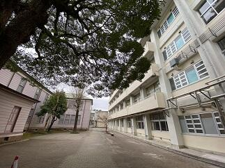


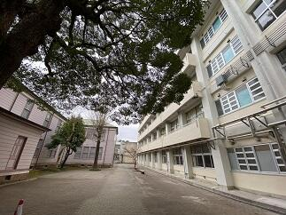
合格祈願（湯島天満宮）
元日、２日ともそれほど寒くもなく初詣には良い日和になりました。私は初詣では昨日に続いて天神様巡りをしています。そこで佐倉高校の皆さんの学業成就と合格祈願をお願いしています。今日は、東京の湯島天満宮（湯島天神）にお参りしてきました。さすがに多くの受験生の参拝者で賑わっていました。受験生の皆さんは、本番で力を発揮できるように健康に気をつけてコンディションを整えていきましょう。応援しています。
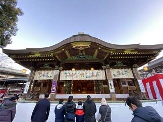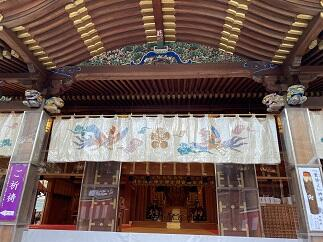
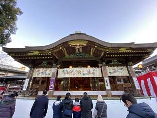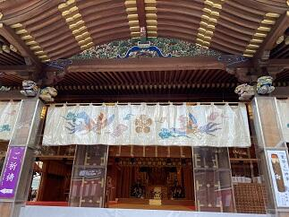
謹賀新年 令和２年（庚子）元旦
明けましておめでとうございます。令和２年元旦です。今年の干支（十干・十二支）は「庚 子（かのえ ね）」です。「子」は十二支の一番目にあたる干支です。「子」の字は、種の中に生命が芽吹き始めた様子を表していて、また、十干の金の陽を表す「庚」は新たな状態への変化を意味していますので、「庚子」の本年は、新しく物事を始める人や、目標に向かってこれまで努力してきた人の背中を後押ししてくれる年回りとなるそうです。皆で健康に気をつけながら目標達成に向けて努力して良い年にしていきましょう。今年もよろしくお願いします。
 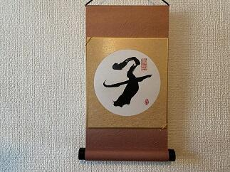
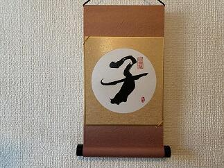
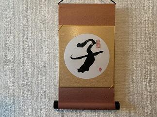 第4回考査が始まりました。
今日（12月3日）から４日間の日程で第４回の定期考査が始まりました。昨日は12月としては記録的な大雨で一時的に10月25日の豪雨を思い出しましたが、今日はとても穏やかな天候となって良かったです。皆で気をつけて風邪やインフルエンザなどに罹らぬように手洗いの励行やマスクの着用で予防していきましょう。また、インフルエンザの予防接種は接種後２週間で効力を発揮しはじめ５か月間有効とのことです。（ちなみに私は既に接種済みなので年度末までは大丈夫かな）皆で健康に気をつけていきましょう。
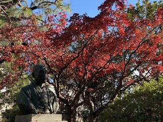

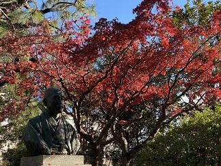
記念館一般公開日に思う
今日（11月23日）は、13:00から16:00の間、時間限定で記念館を一般公開する日です。天候は雨ですが、これはこれで雨に淡く光る紅葉にも格別の趣を感じられるのではないでしょうか。
今も現役で活躍する記念館。ここに一歩足を踏み入れると、創立以来多くの有為な人材を世に送り続けてきた伝統校の学びの場としての凜とした空気を感じられることでしょう。と同時にここで脈々と育まれてきた温かさと何ともいえぬ懐かしさを感じることができるでしょう。そんな記念館だからこそ、伝統が形になって時代を超えて愛し続けられているのだと思います。
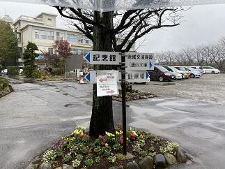


 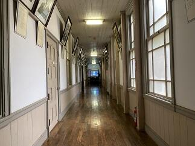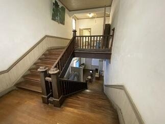
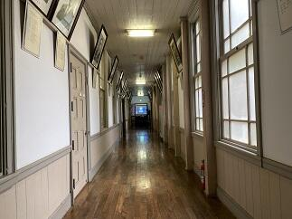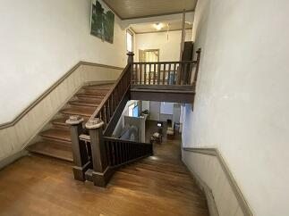
今も現役で活躍する記念館。ここに一歩足を踏み入れると、創立以来多くの有為な人材を世に送り続けてきた伝統校の学びの場としての凜とした空気を感じられることでしょう。と同時にここで脈々と育まれてきた温かさと何ともいえぬ懐かしさを感じることができるでしょう。そんな記念館だからこそ、伝統が形になって時代を超えて愛し続けられているのだと思います。
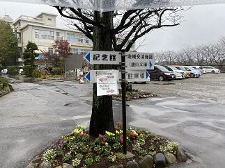
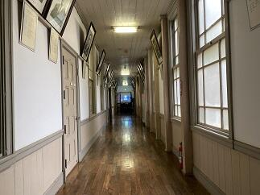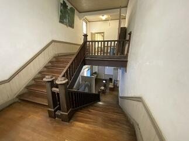
多くの方々の御来場を頂きありがとうございます。

 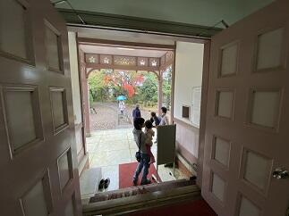
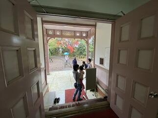
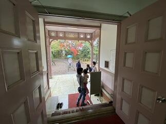 紅葉の季節２
朝晩の冷え込みがかなりきつくなってきました。風邪やインフルエンザに係りやすい時期ですから、手洗いの励行と身体を冷やさないようにして体調管理に気をつけましょう。記念館や東郷池の周りの木々も色とりどりの葉をつけてとても美しい景色を演出してくれています。


さて、今週は先生方が互いに授業を見合い、より良い授業実践を目指して研究実践に取り組む授業練磨の週間です。この時期に多くの研究授業も行われています。昨日行われた授業公開については、保護者や近隣の先生方多くに方々に参観いただきありがとうございました。
→11月27日の様子は続きを読むをクリック
さて、今週は先生方が互いに授業を見合い、より良い授業実践を目指して研究実践に取り組む授業練磨の週間です。この時期に多くの研究授業も行われています。昨日行われた授業公開については、保護者や近隣の先生方多くに方々に参観いただきありがとうございました。
→11月27日の様子は続きを読むをクリック
このところ気温は低く雨ばかりです。体調を崩す人も増えてきていまので気をつけていきましょう。今日の紅葉の様子です。（11月27日）
 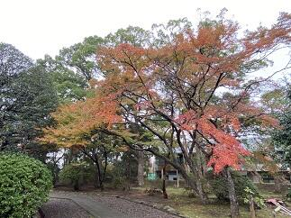
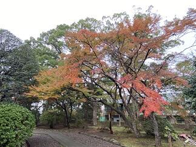
修学旅行最終日その５（感謝）
予定通り帰りの新幹線JR京都駅13：48発のぞみ228号に乗車しました。予定では１６：０３には東京駅につく予定です。
>> 無事予定通り東京駅に着きました。ありがとうございました。生徒はそれぞれ帰宅の途につきました。


>> 無事予定通り東京駅に着きました。ありがとうございました。生徒はそれぞれ帰宅の途につきました。
(16:15時点)
帰りの新幹線はとても早く感じられるのはなぜでしょうか。ほんとに楽しい時間は夢のようjに過ぎて行きます。それでも、今回の旅の経験は、きっと素晴らしい思い出としてそれぞれの記憶に残ることと思います。４日間おつかれ様でした。また、楽しい思い出とその時々に皆さんと一緒に感じられた感動をありがとうございました。


＜関係者の皆様に感謝！＞
お陰様で、４日間の修学旅行を無事に終了することができました。旅行中たいへんお世話になった近畿日本ツーリストの盛永さん、村岡さん、村越さん、新井さん、学校写真の太田さん 本当にありがとうございました。併せて、保護者の皆さん、佐倉高校の教職員の皆さんありがとうございました。修学旅行最終日その４
昼食はホテルでバイキングです。
私はA,D，E，F組とリーガロイヤルホテルでした。料理がとても充実していてとても美味しかったです。いよいよ京都駅に移動です。
 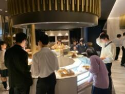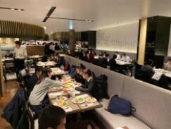
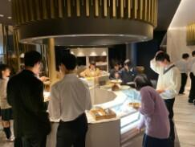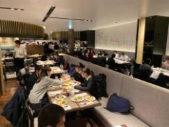
私はA,D，E，F組とリーガロイヤルホテルでした。料理がとても充実していてとても美味しかったです。いよいよ京都駅に移動です。
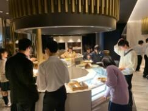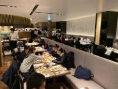 修学旅行最終日その３
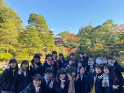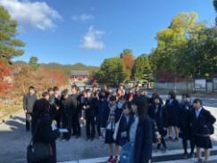 最初の訪問先の仁和寺に行ってきました。御室桜が紅葉していました。
最初の訪問先の仁和寺に行ってきました。御室桜が紅葉していました。
この後は、組紐体験に向かいます。
最初の訪問先の仁和寺に行ってきました。御室桜が紅葉していました。この後は、組紐体験に向かいます。
組紐体験楽しかったです。
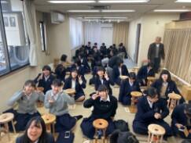

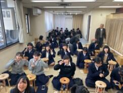
修学旅行最終日その２
今日は、クラス別コースで活動します。出発前にクラス別の集合写真を撮ってからバスで移動します。天気は雲ひとつない快晴です。私はD組と仁和寺に向かいます。


修学旅行最終日その１
今日11月15日はいよいよ修学旅行の最終日となりました。
6：00起床、6：30に朝食です。その後、大きな荷物は宅配便で送ります。
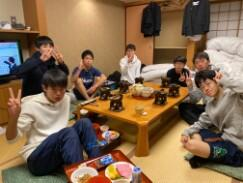
最後まで息を抜かずに安全に留意して最終日を満喫したいと思います。
6：00起床、6：30に朝食です。その後、大きな荷物は宅配便で送ります。
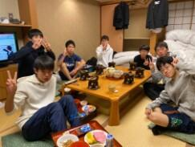
最後まで息を抜かずに安全に留意して最終日を満喫したいと思います。
修学旅行第３日その５
夕食後に修学旅行委員（写真左）と文集係（写真右）の人たちの集合写真の撮影がされました。まずは、これまでの働きに対し感謝申し上げますととも、これからも最高の修学旅行になるようまた、作成する文集が心に残る素晴らしいものとなりますように、最後まで、みんなで協力して頑張っていきましょう。


修学旅行第３日その４
一日の班別活動を終えて皆無事に帰ってきました。この２日間は不慣れな土地での散策活動でしたのでかなり疲れたと思います。帰ってきたときの明るい充実した表情からは仲間と協力していい旅ができたようです。このあと18：00から夕食です。


今日の夕食はすき焼きです。
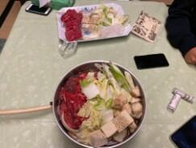
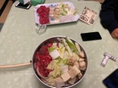
修学旅行第３日その３
本日のチェックポイントは、南禅寺、龍安寺、天龍寺、二条城、東寺でした。どのポイントも予定時間内に通過できました。天気も雲は多いものの良い天気になりました。（写真は聖護院門跡と聖護院とその石庭（修行場））


修学旅行第３日その２
朝食後、先生方の集合写真を撮ったり、保津川下りに行く班は早めに出発したり、着付けをして出かける班など、三々五々の出発風景となりました。元気に明るく出かけていきました。天気も徐々によくなってきています。
 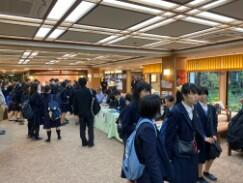
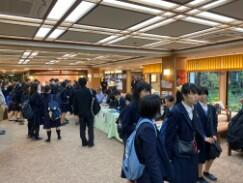
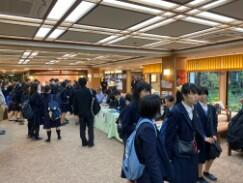 修学旅行第３日その１
今日11月14日5：30の段階では昨夜からの雨は小雨が降ったり止んだりという状況です。バスケット部の男子が朝練で平安神宮周辺をランニングしました。
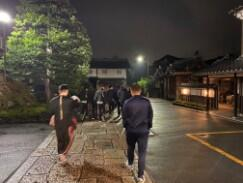
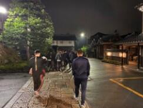
朝食の様子


修学旅行第２日その４
夕食後19：00から希望者は夜間拝観へ出発しました。将軍塚、青蓮院、永観堂、高台寺のうち希望する場所へバスで移動しました。私は、今年は永観堂へ行きました。拝観した全員が予定通り帰って来て、２日目の活動もすべて無事に終了しました。明日の班別活動も思い出に残るすばらしいものにできるように頑張って参ります。（写真は永観堂での拝観の様子）


修学旅行第２日その３
生徒が本日の班別活動を終え、宿舎である聖護院御殿荘へ全員無事に帰って来ました。この後、18：00から部屋ごとに夕食です。


修学旅行第２日その２
各班とも判別活動の出発地に合わせ、宇治平等院方面3台、奈良公園（橿原神宮方面）方面3台、薬師寺方面2台のバスに分乗して移動します。私は、奈良公園方面に移動します。

興福寺の五重塔前でのチェックポイントの様子 時間に余裕を持ってチェックポイントを通ってくれました。この後も気をつけて行ってらっしゃい！


 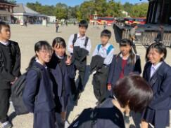
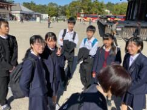
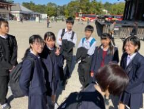 修学旅行第２日その１
6：00起床、吉野の朝は、かなり寒いです。それでも、生徒は元気です。7：00朝食 今日は班別行動なので。大きな荷物は別便で御殿荘に別便で送り、それぞれの出発地となる場所に方面別にバスに分乗して移動します。朝の天気は晴れ、夕方おそくなると雨の心配がありますが、今日も元気に行ってきます。（写真は群芳園からの朝の景色）


今日の朝食風景
 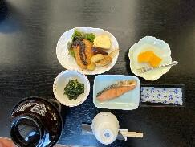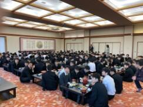
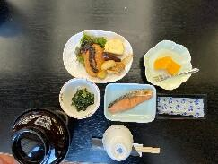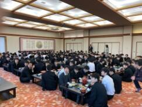
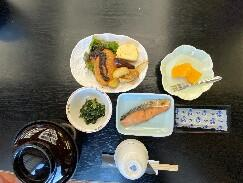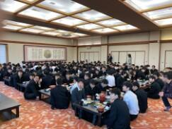 修学旅行第１日その４
竹林院群芳園は世界遺産に登録された桜の名所吉野山の上千本エリアにあります。竹林院の庭園「群芳園」は、大和三代庭園の一つです。竹林院は、そもそも聖徳太子建立の一寺と伝えられ、宿坊として、豊臣秀吉、与謝野晶子はじめ、多くの文人墨客の宿として愛されきたそうです。館内にある書画も然り、来るたびにその奥深い魅力を感じることができる宿です。今日の夕食はみんなで大広間に集まって利休鍋を中心においしく楽しくいただき心も体も温まりました。ごま豆腐やわらび餅も美味しかったです。
 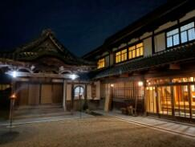
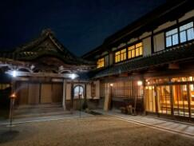 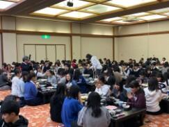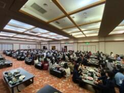
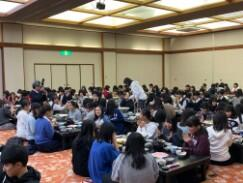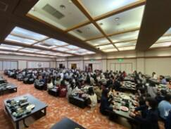
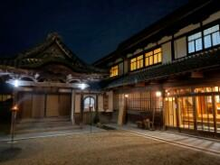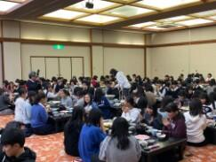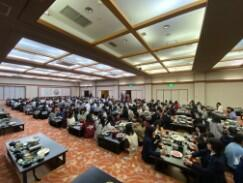 修学旅行第１日その３
列車を降りてからはクラス別にバスで移動です。C,E組は伊賀上野コース、D組は山の辺の道コース、A組は飛鳥古代史コース、B組は、東大寺奈良公園コース、G組は、法隆寺薬師寺コースで、私は、F、H組と共に赤目四十八滝散策コースへ。赤目四十八滝は一級河川の滝川に流れ込む一連の滝郡で滝川の水がとにかく清く澄んでいてきれいでした。また、周辺の山の一部ですが紅葉がとてもきれいでした。前日に雨や雹が降ったそうですが今日は朝から好天に恵まれ、空気は多少冷えていましたがとても澄んでいて気持ち良かったです。スケジュール通り進んでいてこれからバスで本日の宿舎である竹林院群芳園に向かいます。
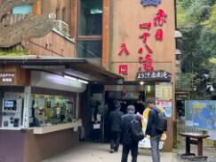
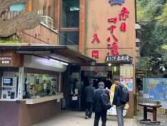
 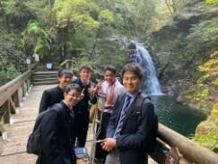
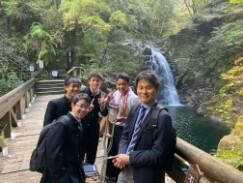


修学旅行第１日その２
名古屋からは近鉄臨時特急（専用車）でクラスごとの目的地である三重県や奈良県に向かいます。


昼食は車内でおいしいお弁当を食べました。車窓からの風景も楽しめました。


修学旅行第１日その１
今日（11月12日）から３泊４日の修学旅行が始まりました。おかげさまで、天候に恵まれ第１日目は順調な滑りだしとなりました。元気に楽しく安全で有意義な旅行になるように頑張ってまいります。お見送りに来ていただいた奥村先生ありがとうございました。

 集合は新幹線ホームです。新幹線で中継駅の名古屋へ向かいます。
集合は新幹線ホームです。新幹線で中継駅の名古屋へ向かいます。
集合は新幹線ホームです。新幹線で中継駅の名古屋へ向かいます。紅葉の季節


 11月9日（土）に120周年記念式典を無事挙行できましたことに対して、皆様に厚く御礼申し上げます。今日は、その式辞のなかで紹介させていただいた東郷池周りの木々の葉が色づき始めた様子をお見せしたいと思います。
11月9日（土）に120周年記念式典を無事挙行できましたことに対して、皆様に厚く御礼申し上げます。今日は、その式辞のなかで紹介させていただいた東郷池周りの木々の葉が色づき始めた様子をお見せしたいと思います。 東郷池復旧状況No.3
県内各地では、まだ台風15号、19号による被害からの回復が、ままならない状況にも関わらず先週金曜日（10月25日）の記録的豪雨によりまた、多くの被害を受けることとなりました。被害に遭われたすべての皆様へお見舞いを申し上げますとともに、一日も早い復旧と落ち着いた日常に戻れますことを祈念いたします。
台風15号で東郷池に直接倒れた檜を含む池周辺の倒木4本を本日（10月28日）やっと、業者の方に撤去していただくことができましたのでお知らせします。（写真 上段から下段左まで撤去の様子 下段中央、右は倒木撤去後の東郷池）


 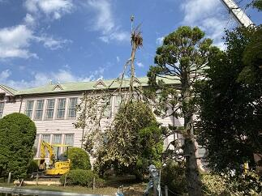
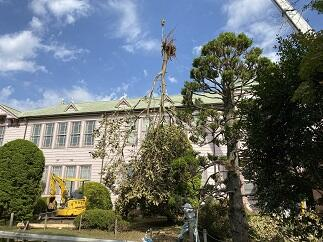


台風15号で東郷池に直接倒れた檜を含む池周辺の倒木4本を本日（10月28日）やっと、業者の方に撤去していただくことができましたのでお知らせします。（写真 上段から下段左まで撤去の様子 下段中央、右は倒木撤去後の東郷池）
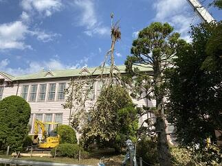 ダンス同好会ハローウィンパフォーマンス
今日（10月24日）の昼休みにダンス同好会によるハローウィンパフォーマンスが行われました。通常であれば、公演場所は、中庭だったのですが、校舎の外壁工事中のため今回は第１体育館での公演となりました。練習も工事のため場所の確保がたいへんだったと思います。それでも、多くの生徒、先生が見守るなか日頃の練習の成果を存分に発揮していたと思います。明るく切れのあるダンスパフォーマンスありがとうございました。


台風一過
観測史上最強の台風19号が昨日10月12日から今日13日にかけて日本各地で猛威を振い、たいへんな被害が出ています。まずは、被災された皆様に心よりお見舞い申し上げます。昨日、佐倉市全域にレベル４の避難勧告が出されました。第一体育館を佐倉市の避難所として昨日の午前10時から開設していました。本校には28名の方々が避難されていました。本校を利用されていた方々は午前6時30分ころには皆さん御自宅にお戻りになられました。佐倉市では、本日午前8時に避難勧告を解除し併せて市内すべての避難所を閉鎖しました。
学校の被害状況ですが、本校の周辺では昨日の23時50分ごろには風雨がおさまりはじめ台風15号に比べて被害は格段に少なくてすみました。写真は何事も無かったような青空の朝の風景。
 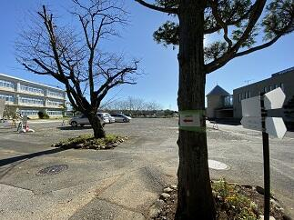
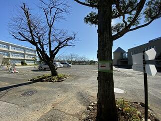

学校の被害状況ですが、本校の周辺では昨日の23時50分ごろには風雨がおさまりはじめ台風15号に比べて被害は格段に少なくてすみました。写真は何事も無かったような青空の朝の風景。
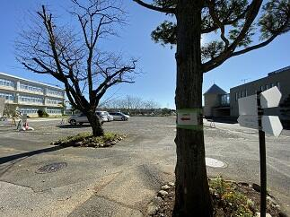 いきいき茨城ゆめ国体カヌースプリント200m競技
今日10月６日（日）は第74回国民体育大会カヌースプリント競技の200ｍの全種目の準決勝までの試合が予定されていましたが、台風並みのの強風のため全種目の予選のみ行って終了しました。明日、200ｍの準決勝と決勝を行うことになりました。明日の天候が良くなることを祈ります。→10月7日の様子は >>続きを読む をクリック


今日10月7日（月）は第74回国民体育大会カヌースプリント競技の200ｍの全種目の準決勝と決勝が行われました。あいにく天候は、昨日ほど風は酷くなかったものの北西の風がコースを進む選手に対して右斜め前方から吹いてくる状況が続いていて、時折雨も強く降る中で、競技が行われました。500ｍに続いて決勝には一歩及びませんでしたが、最後の一漕ぎまで力を出し切ってくれたと思います。大会全体を通して、天候に恵まれませんでしたが、素晴らしい全国の選手達とともに競った試合経験は選手の皆さんの宝であり、今後の糧となることでしょう。本当にお疲れ様でした。そしてありがとうございました。また、応援に来ていただいた保護者の皆様や千葉県教育庁の体育課の方々、本当にありがとうございました。


いきいき茨城ゆめ国体カヌースプリント500m競技
現在、第74回国民体育大会が、茨城県の各地を会場に開催されています。カヌースプリント競技については10月４日（金）から10月７日（月）の４日間で神栖市の神之池特設カヌー競技場で開催されています。昨日は強風の影響で予定していたすべての競技が今日に延期になりました。そのため今日10月５日（土）だけで、予選から決勝までの500ｍのすべての競技を行いました。本校からは少年男子のC1とK4の２種目に出場しました。惜しくも決勝までは、あと一歩でしたが、すばらしい試合をしてくれました。目標をクリアするため日々の練習の方法や試合に臨む気持ちの高め方、自分や友人を信じる強い気持ちの作り方など、全国での最高の檜舞台を踏むことができた選手は、また一段と大きく成長したと思います。応援に来ていたカヌー部員たちも、とても良い刺激を受けて明日からの練習に励めると思います。選手の皆さん本当にありがとうございました。明日、明後日は200ｍの競技も楽しんでください。そして、自分と仲間の力を信じて持てる力を存分に発揮して欲しいと思います。また、保護者の皆さんいつも応援ありがとうございます。


朝霧の風景
今日10月2日（水）の朝は霧が深く、視界が50ｍ位でした。天気予報では日中は気温が30℃に達するということで昨日に引き続き10月としては異例の真夏日の暑さが続きそうです。そんななか、弓道部が、匝瑳高校での練習に向けて元気にバスで出発しました。頑張ってください。


東郷池の復旧状況No.2
10月1日（火）は、3日間の秋休みの初日です。午前中は、学思館で救急救命の講習会が行われています。ブリティッシュヒルズの英語研修は2日目で、SSHの国内サイエンスツアーは今日初日です。東郷池の倒木の処理も少しづつ成果が出てきました。


 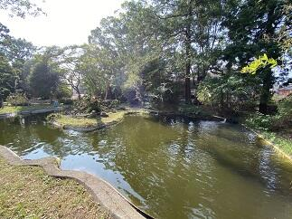
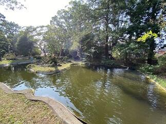
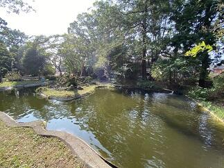 東郷池の復旧状況No.1
台風15号による影響で倒木により悲惨な状況であった東郷池も古川さん、友信さん、渡辺さんのご協力で少しづつ復旧に向けて進んでいます。大きな倒木は専門業者さんにお願いしないと撤去はできませんが、少しづつでも2次被害が出ないように自分たちでできる範囲で作業を進めていて、お陰様で大分見通しが良くなってきました。
被災直後の様子は→台風15号の爪痕
 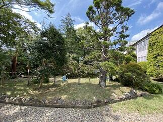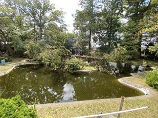
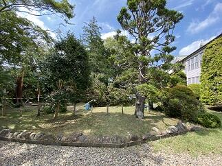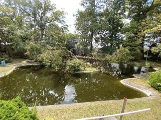
被災直後の様子は→台風15号の爪痕
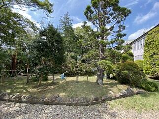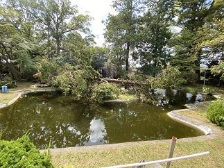
今日９月30日（月）は前期最後の日です。生徒は明日から３日間秋休みです。この間を利用してブリティッシュヒルズの英語研修やSSH国内サイエンスツアーなどが行われます。学校は後期の準備や台風の被害からの復旧を継続して行います。写真は今日の東郷池の復旧状況です。できることを一歩一歩着実に進めています。
 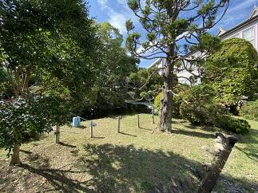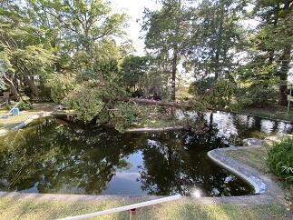
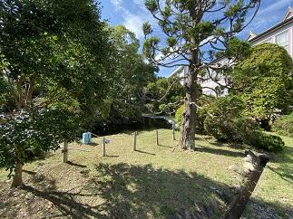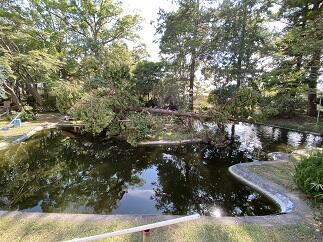
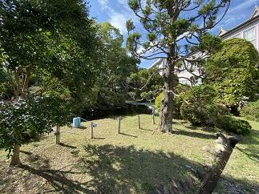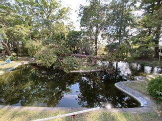 関東高等学校カヌー選手権選抜大会第２日 祝！男子総合優勝
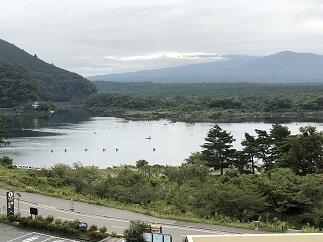大会2日目はすべての競技の決勝が行われます。天候は曇りのままで持ちそうです。
気温は現在14℃ですが、19℃くらいには上がりそうです。湖面は落ち着いた状態でこのまま良いコンディションで試合が行えることを望みます。（7:00時点）
<左の写真は朝の精進湖周辺と練習風景>
→続きは ≫続きを読む 祝！関東大会男子総合優勝 をクリックしてください！
気温は現在14℃ですが、19℃くらいには上がりそうです。湖面は落ち着いた状態でこのまま良いコンディションで試合が行えることを望みます。（7:00時点）
<左の写真は朝の精進湖周辺と練習風景>
→続きは ≫続きを読む 祝！関東大会男子総合優勝 をクリックしてください！
お陰様で決勝にはとても良いコンディションで試合ができました。どの競技においても本校の選手は目標をしっかりと持って試合に臨みその持てる力を十二分に発揮しました。特に本校の強みであるフォア競技では女子カヤックフォアでは２位、男子はカナディアンフォアとカヤックフォアで１位などすばらしい結果でした。その結果として、男子は学校別対抗で総合優勝、女子は総合３位になりました。今まで自分や仲間を信じて顧問の先生方とともに日々頑張って来た結果が表れたと思います。おめでとうございます。今回の試合で得た多くの貴重な経験や思いはそれぞれが、次の目標に向けて努力する良い機会になったと思います。
また、マネージャーの中沢さんは本校の選手だけでなく配艇係として大会のスムーズな運営も完璧に支えてくれました。本当にありがとうございました。
そして、今日も応援に来ていただいた保護者やご家族の皆様ありがとうございました。


＜写真左 富士山を前に円陣組む選手たち＞＜写真中央 WK4決勝の様子＞＜写真右 閉会式 男子総合の表彰＞

 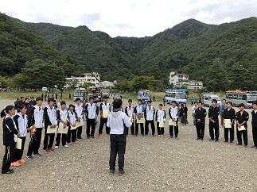
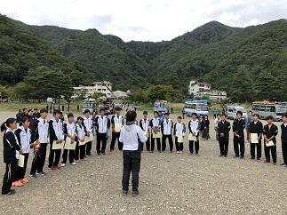＜写真左 優勝カップと喜びの選手たち＞＜写真中央 保護者の方々への感謝＞＜写真右 菅澤先生から部員へのアドバイス＞
令和元年度関東高等学校カヌー選手権選抜大会第１日
9月21日（土）、22日（日）の2日間で令和元年度関東高等学校カヌー選手権選抜大会が山梨県南都留郡富士河口湖精進湖カヌー競技場で開催されます。第1日目の今日は、すべての競技の準決勝までの試合が行われました。朝から天気は曇りで天気予報では、雨が降ったり止んだりということでしたが、試合開始前にちょっとだけ降っただけで何とか持ちました。ただ、気温は15℃位でとても寒い一日でした。本校の選手諸君は開会式の後、いつもどおり円陣を組んで試合に臨みました。それぞれ、自分の設定した目標に向かって良いチャレンジができたと思います。明日行われるすべての競技の決勝に進出することができました。明日も目標に向かって良い試合ができることを期待します。今日も応援に来てくださった保護者やご家族の皆さんありがとうございました。明日も応援よろしくお願いします。


＜写真左 朝の精進湖周辺の様子と練習風景＞＜写真中央 開会式の様子＞＜写真右 円陣を作って気持ちを一つにする選手たち＞


＜写真左 wk2準決勝のレースと応援風景＞＜写真中央 選手とともに記念撮影＞＜写真右 保護者の方々と選手たち＞
＜写真左 朝の精進湖周辺の様子と練習風景＞＜写真中央 開会式の様子＞＜写真右 円陣を作って気持ちを一つにする選手たち＞
＜写真左 wk2準決勝のレースと応援風景＞＜写真中央 選手とともに記念撮影＞＜写真右 保護者の方々と選手たち＞
早朝の風景
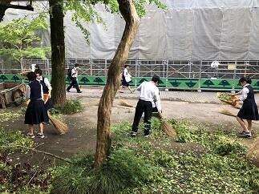 今日9月10日は、朝の段階では、一部電車に運休や遅延が発生していて停電も復旧していない地区では信号が消えているところがたくさんあります。通勤通学の方は決して無理をしないようにお願いします。台風15号の爪痕が残る学校でも少しづつ復旧作業を行っているところです。そんななか、いつものように早朝から剣道部の皆さんが落葉や枝を掃除してくれていました。本当にいつもありがとう。感謝、感謝です。
今日9月10日は、朝の段階では、一部電車に運休や遅延が発生していて停電も復旧していない地区では信号が消えているところがたくさんあります。通勤通学の方は決して無理をしないようにお願いします。台風15号の爪痕が残る学校でも少しづつ復旧作業を行っているところです。そんななか、いつものように早朝から剣道部の皆さんが落葉や枝を掃除してくれていました。本当にいつもありがとう。感謝、感謝です。
今日9月10日は、朝の段階では、一部電車に運休や遅延が発生していて停電も復旧していない地区では信号が消えているところがたくさんあります。通勤通学の方は決して無理をしないようにお願いします。台風15号の爪痕が残る学校でも少しづつ復旧作業を行っているところです。そんななか、いつものように早朝から剣道部の皆さんが落葉や枝を掃除してくれていました。本当にいつもありがとう。感謝、感謝です。 台風15号の爪痕
 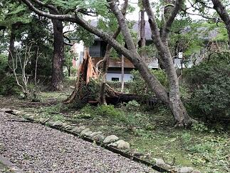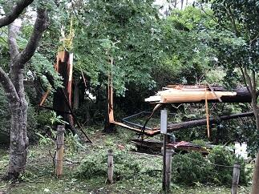
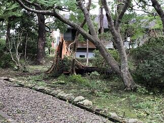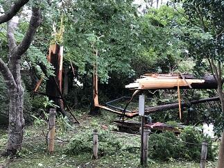
 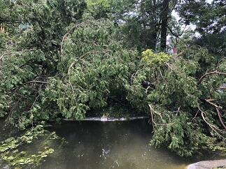本日9月9日(月)未明にかけて暴風雨を伴って県内を直撃した台風15号は、東京湾を北上し朝5時頃に千葉市付近に上陸しました。千葉市では最大瞬間風速57.5ｍを観測し県内での観測史上最大を更新したそうです。この影響で県内では広く停電が発生しました。今現在も、停電が続いているなど暴風雨での多くの被害が千葉県の各地で報告されています。天気が回復した後の塩害も心配です。被災された方々には心からお見舞い申しあげると共に 復旧にご尽力されている皆様には感謝を申し上げるとともに安全に留意され一日も早く作業の終えられることをお祈りいたします。
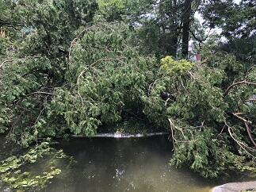本日9月9日(月)未明にかけて暴風雨を伴って県内を直撃した台風15号は、東京湾を北上し朝5時頃に千葉市付近に上陸しました。千葉市では最大瞬間風速57.5ｍを観測し県内での観測史上最大を更新したそうです。この影響で県内では広く停電が発生しました。今現在も、停電が続いているなど暴風雨での多くの被害が千葉県の各地で報告されています。天気が回復した後の塩害も心配です。被災された方々には心からお見舞い申しあげると共に 復旧にご尽力されている皆様には感謝を申し上げるとともに安全に留意され一日も早く作業の終えられることをお祈りいたします。今日は各社とも計画的に始発電車から運休しており、移動の主体は自家用車やバスなどの自動車となった訳です。それなのに今日の道路状況は普段と違い、高速道路は全面通行禁止で、一般道では信号機のほとんどが消えており、冠水して車が何台も浸かっていたり、電柱が折れていたり、倒木で道を塞いでいたりと走れる道路を探すのが一苦労でした。また、やっと走れる道を見つけても大渋滞と運転するのにとっても疲れました。学校に通勤するのに4時間かかりました。学校に着いて校舎施設や樹木などの被害状況を確認すると今回の台風のすごさを改めて実感しました。その一部ですが東郷池周辺の倒木(3本の檜、内2本は東郷池の中に枝を入れて倒れている)と記念館の屋根(中央タワーの屋根の支え板が破損)の被害状況をお知らせします。本当にこの光景を見た時は、いつも見慣れた風景がそこには無く、ショックを隠しきれませんでした。
→ 池の鯉の様子は ≫続きを読む 東郷池の鯉 をクリックしてください。
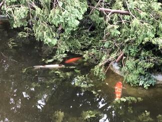
 台風15号で被害を受けた東郷池の現状です。倒木は池の中にその枝を入れた状態で倒れています。そんな中でもお陰様で鯉や鮒やメダカは無事でした。
台風15号で被害を受けた東郷池の現状です。倒木は池の中にその枝を入れた状態で倒れています。そんな中でもお陰様で鯉や鮒やメダカは無事でした。
池の水の手作り循環濾過装置も無事に動いているので池の水自体はきれいです。鯉たちは元気に泳いでいます。
台風15号で被害を受けた東郷池の現状です。倒木は池の中にその枝を入れた状態で倒れています。そんな中でもお陰様で鯉や鮒やメダカは無事でした。池の水の手作り循環濾過装置も無事に動いているので池の水自体はきれいです。鯉たちは元気に泳いでいます。
東郷池クリーン作戦
 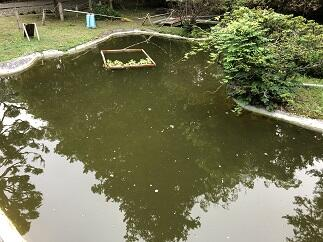
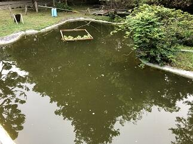 東郷池は現在アオコが発生していてグリーンウオーター状態です。せっかく見えていた鯉の泳ぐ姿もわかりにくい状態です。そこで、少しでもアオコを除去して池の水を浄化する作戦を開始しました。対策は、水棲生物による浄化とろ過機によるアオコの除去の２方面作戦です。水棲生物の代表はヒメタニシとホテイアオイです。ヒメタニシは８月30日（金）に50匹を池に放しました。ホテイアオイは９月４日に池に入れました。手作りの池の水の循環濾過装置は濾過材を９月２日から新しくしました。結果が出てくれると良いのですが。
東郷池は現在アオコが発生していてグリーンウオーター状態です。せっかく見えていた鯉の泳ぐ姿もわかりにくい状態です。そこで、少しでもアオコを除去して池の水を浄化する作戦を開始しました。対策は、水棲生物による浄化とろ過機によるアオコの除去の２方面作戦です。水棲生物の代表はヒメタニシとホテイアオイです。ヒメタニシは８月30日（金）に50匹を池に放しました。ホテイアオイは９月４日に池に入れました。手作りの池の水の循環濾過装置は濾過材を９月２日から新しくしました。結果が出てくれると良いのですが。 第74回千葉県合唱コンクール
本日9月1日（日）に千葉・県民芸術祭～文化でつなぐ千葉のちから～第74回千葉県合唱コンクールの高等学校・大学職場一般部門が千葉県文化会館を会場に開催されました。本校の音楽部も女声合唱で出場しました。演奏曲は課題曲「飛翔ー白鷺」（「内なる遠き」から）（高野喜久雄 詩／高田三郎 曲）自由曲「O VOS OMNES」(おお すべての人よ)「SALVE REGINA」(栄えあれ、女王よ) （2曲ともKOCAR MIKLOS作曲）の3曲でした。声質も音程もすごくまとまってキレイなハーモニーでした。そして、各パートが互いの良さを引き出していて、声もとても良く出ていたと思います。この夏のコンクール出場経験や日々の練習から多くのことを学んだ成果が出ていたと思いました。音楽部の皆さんすばらしい演奏をありがとうございました。
令和元年度カヌー新人大会
本日8月24日は令和元年度千葉県高等学校新人カヌー大会令和元年度関東高等学校選抜カヌー大会千葉県予選会が香取市黒部川カヌー場で行われました。大会で選考された選手は9月21日、22日に精進湖で行われる関東大会に出場します。レースコンディションとしては、風の影響で波が強く唯でさえ緊張していた初めての公式戦参加の1年生選手には思ったとおりにレース展開ができなかったかもしれません。逆に、主力となった2年生の選手の成長がすばらしく頼もしく見えました。選手の皆さんお疲れ様でした。すべての選手が今回のレースで得た課題を次の試合に向けて明日からの練習で修正していってもらえると思います。
今回も香取市水上スポーツ指導員の皆様にはいつも以上にお世話になりました。本当にありがとうございました。また、保護者の皆様にはいつも応援ありがとうございます。


今回も香取市水上スポーツ指導員の皆様にはいつも以上にお世話になりました。本当にありがとうございました。また、保護者の皆様にはいつも応援ありがとうございます。
千葉県吹奏楽コンクール2019本選大会
 本日８月12日（月）第61回令和元年度千葉県吹奏楽コンクール2019本選大会（高等学校のA部門）が千葉県文化会館を会場に行われました。東関東大会への推薦校が決定される大会です。さすがに予選会を優秀な成績で通過した団体ばかりで、課題曲・自由曲どれもが団体の個性が出ていてどこも素晴らしく感動的な演奏ばかりでした。佐倉高校は演奏順番が1番でプレッシャーがかかるなか、日頃の成果を十分に発揮できたと思います。特に各楽器の個性が曲調のなかで曲の表現とともに十分に引き出された演奏が行われたと思います。素晴らしい演奏をありがとうございました。
本日８月12日（月）第61回令和元年度千葉県吹奏楽コンクール2019本選大会（高等学校のA部門）が千葉県文化会館を会場に行われました。東関東大会への推薦校が決定される大会です。さすがに予選会を優秀な成績で通過した団体ばかりで、課題曲・自由曲どれもが団体の個性が出ていてどこも素晴らしく感動的な演奏ばかりでした。佐倉高校は演奏順番が1番でプレッシャーがかかるなか、日頃の成果を十分に発揮できたと思います。特に各楽器の個性が曲調のなかで曲の表現とともに十分に引き出された演奏が行われたと思います。素晴らしい演奏をありがとうございました。 復活‼美しい東郷池


 先日お伝えした東郷池クリーンアップ作戦が功を奏して、鯉や鮒やメダカが泳ぐ姿が美しく映える東郷池が復活しました。とにかくうれしいかぎりです。まずはご覧ください。(上の写真は早朝の東郷池の風景です)
先日お伝えした東郷池クリーンアップ作戦が功を奏して、鯉や鮒やメダカが泳ぐ姿が美しく映える東郷池が復活しました。とにかくうれしいかぎりです。まずはご覧ください。(上の写真は早朝の東郷池の風景です) 


 池の中の鯉たちは新しい東郷池の環境に慣れてきたようで、ひと安心です。（夕方の東郷池の風景です）
池の中の鯉たちは新しい東郷池の環境に慣れてきたようで、ひと安心です。（夕方の東郷池の風景です） 東郷池の水全部抜く！


 東郷池のきれいな水の中を鯉がゆうゆうと泳ぐ姿を見たいということで、昨年からいろいろな手段を使って東郷池クリーンアップ作戦を行って参りましたが、残念ながら緑に濁った池の水を変えることができませんでした。ということで、とりあえずまず池の水を全部抜いて池を掃除して新しい水に入れ替えてみようということで今日、東郷池の水全部抜いてみました。朝6時から夕方の6時まで12時間かかりましたが掃除ができました。
東郷池のきれいな水の中を鯉がゆうゆうと泳ぐ姿を見たいということで、昨年からいろいろな手段を使って東郷池クリーンアップ作戦を行って参りましたが、残念ながら緑に濁った池の水を変えることができませんでした。ということで、とりあえずまず池の水を全部抜いて池を掃除して新しい水に入れ替えてみようということで今日、東郷池の水全部抜いてみました。朝6時から夕方の6時まで12時間かかりましたが掃除ができました。古川さん、友信さん、高木事務長さんありあがとうございました。掃除してわかったのは、思いのほか綺麗になりとってもうれしかったです。なお、池にいる鯉、鮒、メダカには池の準備ができるまで用意した水槽に移住してもらいました。
令和元年度全国総合体育大会カヌー競技大会第2日

 本日8月４日は令和元年度全国高等学校総合体育大会カヌー競技大会の500ｍの第2日目の競技が鹿児島県伊佐市菱刈カヌー競技場で行われます。第２日目は各種目の決勝が行われます。生徒は早朝から会場入りしアップを行って、8:00からのレースに臨みます。天気予報では本日も天気は腫れで暑くなりそうです。良いレースができることを期待します。(会場にはトンボがすごくいっぱい飛んでいました。)
本日8月４日は令和元年度全国高等学校総合体育大会カヌー競技大会の500ｍの第2日目の競技が鹿児島県伊佐市菱刈カヌー競技場で行われます。第２日目は各種目の決勝が行われます。生徒は早朝から会場入りしアップを行って、8:00からのレースに臨みます。天気予報では本日も天気は腫れで暑くなりそうです。良いレースができることを期待します。(会場にはトンボがすごくいっぱい飛んでいました。) 


 台風8号の接近が予想されているため、明日５日、明後日６日に予定されていた200ｍ競技については中止になりました。大変残念ですが今年度の総体のカヌー競技スプリントの部は今日の500ｍ決勝で終わりとなりました。気力の充実した実力伯仲の選手たちが繰り広げた決勝は、最後の最後の一漕ぎまで結果がわからない手に汗にぎるレースばかりでした。選手の皆さん本当にお疲れ様でした。そして最後まで感動をありがとうございました。
台風8号の接近が予想されているため、明日５日、明後日６日に予定されていた200ｍ競技については中止になりました。大変残念ですが今年度の総体のカヌー競技スプリントの部は今日の500ｍ決勝で終わりとなりました。気力の充実した実力伯仲の選手たちが繰り広げた決勝は、最後の最後の一漕ぎまで結果がわからない手に汗にぎるレースばかりでした。選手の皆さん本当にお疲れ様でした。そして最後まで感動をありがとうございました。さて、千葉県選手団の結果ですが、本校から決勝に進出したC4では入賞はできませんでしたが、素晴らしいスタートを切れたレースでした。小見川高校が出場した男子K1は6位、女子K1は1位、K2は2位、K4は1位と昨年に続く素晴らしい結果でした。おめでとうございます。最後まで、応援してくださったOBや選手のご家族の皆さんありがとうございました。選手は最高の舞台で多くの刺激を受けるとともに多くのことを学ぶことができたと思います。そして、また一段と成長することができたと思います。これからもここまで努力してきた経験を多くの場面で生かしていってください。
令和元年度全国総合体育大会カヌー競技大会第１日


 本日8月3日は令和元年度全国高等学校総合体育大会カヌー競技大会の500ｍ競技の第１日目が鹿児島県伊佐市菱刈カヌー競技場で行われました。本日は、すべての種目の予選と準決勝が行われました。本校からは、男子のK４、C４、K２、C２、C1の5種目に出場しました。猛暑の中、全国から集まった選手たちは最後の最後まで持てる力を十分に発揮して素晴らしいレースを繰り広げていました。選手の皆さん、お疲れ様でした。それと共に感動をありがとうございました。本校からはC4で明日の決勝に進出することができました。千葉県選手団としては、小見川高校から女子K４、K2、K1、男子K1で明日の決勝に進出しました。おめでとうございます。明日の決勝もここまで共に頑張ってきた仲間と自分を信じてレースを楽しんで欲しいと思います。あわせて、カヌー部OBや選手のご家族の皆さん、応援いつもありがとうございます。明日も応援よろしくお願いします。
本日8月3日は令和元年度全国高等学校総合体育大会カヌー競技大会の500ｍ競技の第１日目が鹿児島県伊佐市菱刈カヌー競技場で行われました。本日は、すべての種目の予選と準決勝が行われました。本校からは、男子のK４、C４、K２、C２、C1の5種目に出場しました。猛暑の中、全国から集まった選手たちは最後の最後まで持てる力を十分に発揮して素晴らしいレースを繰り広げていました。選手の皆さん、お疲れ様でした。それと共に感動をありがとうございました。本校からはC4で明日の決勝に進出することができました。千葉県選手団としては、小見川高校から女子K４、K2、K1、男子K1で明日の決勝に進出しました。おめでとうございます。明日の決勝もここまで共に頑張ってきた仲間と自分を信じてレースを楽しんで欲しいと思います。あわせて、カヌー部OBや選手のご家族の皆さん、応援いつもありがとうございます。明日も応援よろしくお願いします。 合格祈願その２

 会議で京都に行く機会があったので、今回は北野天満宮に3年生の合格祈願に行ってきました。
会議で京都に行く機会があったので、今回は北野天満宮に3年生の合格祈願に行ってきました。北野天満宮でも宮司さんにご祈祷をお願いし拝殿に上がらせていただいて参拝してまいりました。宮司さんから来年3月末日まで毎朝ご神前にてご祈祷していただける旨お伺いしました。本当にありがたいことです。ご祈祷のあと、合格祈願の絵馬を奉納させていただきました。
北野天満宮は、菅原道真公をご祭神としておまつりする全国約1万2000社の天満宮、天神社の総本社だそうです。ところで、菅原道真公といえば梅ですが、広く境内を使って梅干しの土用干しがされていて、おいしそうな梅酢の香りが辺り一面をやさいく包んでいました。
合格祈願その１
 大宰府天満宮で３年生の合格祈願をしてきました。宮司さんにご祈祷をお願いし本殿に上がらせていただいて参拝してまいりました。宮司さんから太宰府天満宮は、菅原道真公の御墓所の上にご社殿を造営し、その御神霊を永久にお祀りしている神社であることをお聞きしました。３年生の諸君、将来の夢の実現に向けて頑張ってください。応援してます。
大宰府天満宮で３年生の合格祈願をしてきました。宮司さんにご祈祷をお願いし本殿に上がらせていただいて参拝してまいりました。宮司さんから太宰府天満宮は、菅原道真公の御墓所の上にご社殿を造営し、その御神霊を永久にお祀りしている神社であることをお聞きしました。３年生の諸君、将来の夢の実現に向けて頑張ってください。応援してます。 第43回全国高等学校総合文化祭


 今年度の全国高等学校総合文化祭は佐賀県で開催されています。美術・工芸部門は佐賀県立の博物館と美術館を会場に7月27日から31日まで作品の展示が行われています。そこには、全国から選ばれた絵画、版画、彫刻、デザイン、工芸、映像など約400点の作品が展示されています。本校からも県の代表として美術・工芸部門で吉原さんの作品が出展されています。吉原さんの作品は制作日数も約９か月という大作で、部分ごとに違った多くの素材や制作技法が施されていて、しかも完成度が高いものとなっていました。展示されているどの作品も目を奪われ感動するものばかりでした。全国から参加している生徒たちには、期間中に、他の生徒たちとともに、グループ活動や専門家による研修会など多くの学びの機会が用意されています。これらにより知識やスキルの向上はもとより、多くの刺激を受けることで更なる創作意欲が膨らむ素晴らしい機会になっていると思います。
今年度の全国高等学校総合文化祭は佐賀県で開催されています。美術・工芸部門は佐賀県立の博物館と美術館を会場に7月27日から31日まで作品の展示が行われています。そこには、全国から選ばれた絵画、版画、彫刻、デザイン、工芸、映像など約400点の作品が展示されています。本校からも県の代表として美術・工芸部門で吉原さんの作品が出展されています。吉原さんの作品は制作日数も約９か月という大作で、部分ごとに違った多くの素材や制作技法が施されていて、しかも完成度が高いものとなっていました。展示されているどの作品も目を奪われ感動するものばかりでした。全国から参加している生徒たちには、期間中に、他の生徒たちとともに、グループ活動や専門家による研修会など多くの学びの機会が用意されています。これらにより知識やスキルの向上はもとより、多くの刺激を受けることで更なる創作意欲が膨らむ素晴らしい機会になっていると思います。関連ページ→工芸部 全国高等学校総合文化祭
野球応援No.3
 本日７月17日（水）14:00からマリンスタジアムで市立柏高校との試合が予定されています。この試合に向けて本校応援団もバスで移動しました。皆さん、今日も応援よろしくお願いいたします。
本日７月17日（水）14:00からマリンスタジアムで市立柏高校との試合が予定されています。この試合に向けて本校応援団もバスで移動しました。皆さん、今日も応援よろしくお願いいたします。→ たくさんの応援ありがとうございました。
応援団の皆さん、佐倉高校の応援は気持ちがこもっていて、とっても暖かい素晴らしい応援でした。今日の試合は負けてしまいましたが、野球部の皆さん今年の夏の大会もたくさんの感動をありがとうございました。また、たくさんの皆様の応援ありがとうございました。今後ともよろしくお願いいたします。
カヌー競技国体関東ブロック大会

 今日は山梨県の精進湖でカヌースプリント競技の国体の関東ブロック大会が行われます。昨日の予報では競技時間に大雨の予想でしたが、予報より早く大雨が通り過ぎてくれたので、このままいけば10:00には少しでも良いコンディションで競技ができそうです。
今日は山梨県の精進湖でカヌースプリント競技の国体の関東ブロック大会が行われます。昨日の予報では競技時間に大雨の予想でしたが、予報より早く大雨が通り過ぎてくれたので、このままいけば10:00には少しでも良いコンディションで競技ができそうです。なお、高校生が出場する少年の部では７つの競技（少年男子・女子それぞれでカヤックシングル、カヤックペア、少年男子のカナディアンシングル、カナディアンペアとカヤックフォア）が行われます。
→ 祝 国体出場決定への続きは下の>>続きを読むをクリックしてください。


9:00から大会の開会式が行われました。開会式では本大会を主管する千葉県カヌー協会本清秀雄会長から選手の皆さんへのご挨拶や選手代表の宣誓などが行われました。本大会では関東の各都県の１位の代表選手が集まって行われる競技となります。大会委員長の千葉県スポーツ協会の青木寛専務理事や多くの保護者の方々が見守るなか10:00から予定通りに競技が開始されました。雨は途切れませんでしたが、霧雨のような状態が多く、富士山や周りの山からの吹きおろしの風が無かったので湖面も落ち着いた状態で競技を行うことができました。各種目ごとに決められた通過数までの順位の人だけが10月に茨城県神栖市神之池カヌー場でおこなわれる国体に出場できます。今回の結果は千葉県としては少年の部において７種目中５種目で国体に出場できることになりました。本校からもカナディアンシングルとカヤックフォアの2種目で県代表として選手が出場することが決まりました。おめでとう！！今回の大会で得ることができた多くのことを生かして国体での入賞を目指して励んでもらいたいと思います。最後に、大会運営をされた千葉県カヌー協会、山梨県カヌー協会の皆様ありがとうございました。また、保護者の皆様、OB,OGの皆様、今日も応援ありがとうございました。これからもよろしくお願いいたします。
野球応援No.2
本日の流通経済大学付属柏高校との対戦は、２－１で本校の勝利で次の試合に進むことができました。野球部の選手のみんなが明るく自信に満ちていて、終始落ち着いた表情で試合に臨んでいることにいつも感心させられます。特に守備については冷静な判断と確かな技術でプレーしている姿に観ている我々が本当に落ち着いて試合を観ていることができました。自分と一緒に練習を頑張ってきた仲間や先生を信じてプレーすることのできるすばらしいチームだとあらためて感じました。さらに、選手を支えてくれたのは応援席から応援し続けてくださった人たち。その人たちからの声や思いがどれだけ選手を元気づけてくれたことか本当に感謝にたえません。本校の応援席は応援団や先生方、生徒に加え保護者の皆様や野球部OBの方々等多くの方が応援に来てくださり、写真にあるように満杯でした。多くの人たちが思いを一つにできる応援ってすばらしいですね。今日も応援本当にありがとうございました。次は市立柏高校とマリンスタジアムで７月15日（月）14:00に試合開始予定です。ただし、明日の天候によっては明日以降の試合が順延になることも考えれますので試合の開催日程については大会ホームページでご確認ください。次も応援よろしくお願いいたします。
→なお、追加情報は写真の下の>>続きを読むをクリックしてください。


→なお、追加情報は写真の下の>>続きを読むをクリックしてください。
長引く梅雨の影響で、本日（７月16日）に予定されていた千葉大会第３回戦の試合も明日（７月17日）に順延となりました。台風も接近しているようで梅雨前線への影響もかなり予想されているため試合を予定どおり実施するのが難しい状況が続きそうです。つきましては大会日程について大会ホームページをご確認くださるようお願いいたします。
→７月17日（水）7:40現在今日の試合は予定通り行うそうです。応援よろしくお願いします。
→７月17日（水）7:40現在今日の試合は予定通り行うそうです。応援よろしくお願いします。
野球応援No.1

 今日７月13日（土）は、第101回全国高等学校野球選手権千葉大会の第2回戦の相手である流通経済大学付属柏高校との対戦の日です。試合開始は11:30の予定。早朝から集まってくださった応援委員と吹奏楽部による大応援団の皆さんと顧問の先生方ととともにバスで一路、対戦の地ナスパスタジアムを目指します。皆さんも応援よろしくお願いします。
今日７月13日（土）は、第101回全国高等学校野球選手権千葉大会の第2回戦の相手である流通経済大学付属柏高校との対戦の日です。試合開始は11:30の予定。早朝から集まってくださった応援委員と吹奏楽部による大応援団の皆さんと顧問の先生方ととともにバスで一路、対戦の地ナスパスタジアムを目指します。皆さんも応援よろしくお願いします。 読書案内の勧め
昨日、佐倉高校図書館より「新着図書案内」と「読書案内」が配られました。新着図書の一覧を見るたびに本当にすばらしい選書で、これらを図書館から借りてすぐに読めるのはすばらしく幸せなことだと毎回思います。また、そこには図書委員の生徒さんからのおすすめ本の紹介もありこれがまたすばらしい。その中に大数学者の岡潔先生の「数学を志す人に」がすすめられていて、私自身としては個人的には岡潔先生の本で数学を学んだり、先生の啓蒙書を拝読したりしてましたのでこの本を紹介してくれたことにうれしさを感じました。また、「読書案内」は私が楽しみに心待ちしている先生・生徒への配付物のひとつです。そこには、本校の本のソムリエ高柳先生と佐藤先生からそれぞれ毎回一冊ずつ本が紹介されます。お二人が書かれる本の紹介が俊逸です。これを読むと、お二人の経験や感じ方などがいきいきとした情景描写や心理描写とともになされるなか紹介本への誘いが、さりげなく、しかも奥深く心に染み入ることで本の魅力が高まっていきます。是非、保護者の皆様も御一読されてみてはいかかがでしょうか。さて、今月高柳先生からご紹介のあった「八日目の蝉」にちなんでという訳ではありませんが、今年は今までのところ（７月上旬まで）千葉や東京など関東で蝉の声を聞いた割合が全国で最低だそうです。そういえば、私も聞いていないなぁと思いましたが皆様の周りではどうですか。関東以外でも福島や宮城など梅雨寒の影響が顕著だった地域では同じ状況だそうです。また、話は変わりますが、蝉といえば北米には、ちょうど17年ごとと13年ごとに大量発生する蝉がいて、「素数蝉」とよばれています。普通の蝉とはまったく違うサイクルで生きていて「なぜ17年周期と13年周期で大発生するのか。」というこの難問を日本の生物学者 吉村仁教授が解明し、当時の生物界を驚かせたのは記憶に新しいところです。
スケジュール（特に目標）の確認を！！
2019年度に入って、1年生は4月9日に入学してから78日、２，３年生は、始業式から79日目です。この間、皆さんは多くのことに取り組んできました。日々の学習はもちろん第一回考査、部・同好会活動、生徒総会、体育祭、文化祭などそれぞれに皆さんはご自分で目標を立ててその目標達成に向かって励んで来たと思います。それらの目標の達成状況はどうでしたか。目標もスパンの長い長期目標とその目標を中間で点検する中期目標と日々の努力を確認するための短期の目標があります。それらの目標は具体的で自分で客観的に達成状況を評価できるものでなければなりません。今自分には、自分が目指す将来の目的に向かって何が理解できていて、何ができて、自分は目的に向かってどこまで見えるようになってきたのか。裏返せば、何ができていないか。何を理解していないか、目的達成までの道のりのどこを歩んでいるのか、はっきりさせることで具体的な目標を立てて学ぶことができます。そのためにも、達成目標と期間との関係は重要です。例えば、最後のセンター試験は2020年1月18日、19日ですから、あと207日、これに代わる「大学入学共通テスト」は更にその約１年後の2021年1月に実施が予定されています。これらはひとつの区切りとして皆さんの目標になるわけです。これまでの進捗を考慮して、どのような目標をどの時期に立てて臨んでいくのか。しっかりと自分の将来の目的と向き合ってみてください。より具体的な目標を設定してある達成可能なスケジュールかどうかの確認を自分だけでなくアドバイスをいただきたい人にも見てもらって確認してください。
そして、そのとき大切なことは、目標や進捗状況を可視化することです。自分の思考を整理するためだけでなくアドバイスを受けたいと思う人に確認してもらうためにも有効な手段となります。
明日は第2回考査の一週間前ですから考査日程が発表されます。考査もひとつの短期目標として日々の学習の達成状況の確認により良く活用してください。
そして、そのとき大切なことは、目標や進捗状況を可視化することです。自分の思考を整理するためだけでなくアドバイスを受けたいと思う人に確認してもらうためにも有効な手段となります。
明日は第2回考査の一週間前ですから考査日程が発表されます。考査もひとつの短期目標として日々の学習の達成状況の確認により良く活用してください。
鍋山祭第２日（一般公開N0.5）


 体育館では、吹奏楽部が演奏パフォーマスを披露してくれました。吹奏楽部は、いつも学校行事を支えてくれて盛り上げてくれています。この時期は鍋山祭のでのパフォーマスだけでなく野球応援の練習なども行ってくれています。体育館での演奏は超満員で大盛況でした。
体育館では、吹奏楽部が演奏パフォーマスを披露してくれました。吹奏楽部は、いつも学校行事を支えてくれて盛り上げてくれています。この時期は鍋山祭のでのパフォーマスだけでなく野球応援の練習なども行ってくれています。体育館での演奏は超満員で大盛況でした。 鍋山祭第２日（一般公開N0.4書道パフォーマンス）


 書道部による書道パフォーマンスが中庭で行われました。雨がポツリポツリとしていましたが、多くのギャラリーが見つめるなか素晴らしいパフォーマンスを披露してくれました。
書道部による書道パフォーマンスが中庭で行われました。雨がポツリポツリとしていましたが、多くのギャラリーが見つめるなか素晴らしいパフォーマンスを披露してくれました。 鍋山祭第２日（一般公開日No.3）

 鍋山祭第２日目では、PTAバザーが催されていて、地域交流施設の他に受付付近でも出店していて佐倉高校応援Tシャツや応援タオル、ガリ版アート作家、西岡としこ様による記念館デザインのトートバック、１２０周年記念和菓子など佐倉高校１２０周年を盛り上げるためにPTA役員の方々が企画製作された記念グッズが販売されていました。
鍋山祭第２日目では、PTAバザーが催されていて、地域交流施設の他に受付付近でも出店していて佐倉高校応援Tシャツや応援タオル、ガリ版アート作家、西岡としこ様による記念館デザインのトートバック、１２０周年記念和菓子など佐倉高校１２０周年を盛り上げるためにPTA役員の方々が企画製作された記念グッズが販売されていました。 鍋山祭第２日（一般公開No.2）


生徒もご来場された多くのお客さまも皆さん大変嬉しそうな様子でとてもよかったです。
茶道部のお茶会には堀田家第１３代当主堀田正典様にもご参加いただき楽しんでいただきました。
鍋山祭第２日（一般公開日N0.1千客万来）

 今日の一般公開日はあいにくの曇り空ですが、例年にも増して多くのお客様にご来場いただいています。会場はすごい熱気です。
今日の一般公開日はあいにくの曇り空ですが、例年にも増して多くのお客様にご来場いただいています。会場はすごい熱気です。 鍋山祭第１日（校内発表N0.5）

 今日の15:00ごろから佐倉市近辺は、一時的でしたが大雨洪水警報が出るほどの突然の豪雨でした。その影響もあり書道部は明日の書道パフォーマンスの練習を体育館のピロティで行っていました。他の団体も明日の一般公開に向けてお客様を迎える準備に余念がありません。明日は一日中天気がもってくれることを願います。
今日の15:00ごろから佐倉市近辺は、一時的でしたが大雨洪水警報が出るほどの突然の豪雨でした。その影響もあり書道部は明日の書道パフォーマンスの練習を体育館のピロティで行っていました。他の団体も明日の一般公開に向けてお客様を迎える準備に余念がありません。明日は一日中天気がもってくれることを願います。本校に明日ご来校予定の皆さまどうぞお気をつけてお越しください。心よりお待ちしています。
一般公開は６月２２日（土）9:00 ～14：30です。
鍋山祭第１日（校内発表No.4）
 本日の締めくくりは中夜祭です。ダンスやバンドのパフォーマンスで熱気がすごい。その中でパフォーマーも、もちろんすごいけど機材トラブルなど臨機応変に対応をして場をコントロールしている司会者は本当にすばらしかったです。
本日の締めくくりは中夜祭です。ダンスやバンドのパフォーマンスで熱気がすごい。その中でパフォーマーも、もちろんすごいけど機材トラブルなど臨機応変に対応をして場をコントロールしている司会者は本当にすばらしかったです。 PTA役員の皆さんの支援活動に感謝！


今日はPTAの本部役員さんを中心とする役員の方々が明日のバザーの準備をしていただきました。
また、広報委員の方々も、PTA広報の取材と編集のために今日と明日活動されます。
PTA役員の皆さん本当にご多用なかいつも生徒の活動支援のためにご協力していただいて本当にありがとうございます。
明日は鍋山祭の一般公開と1,000か所ミニ集会もどうそよろしくお願いいたします。
鍋山祭第１日（校内発表No.3）


 書道部の作品展は気持ちのこもった力強い作品が多かったです。音楽部は、少人数ながらパートの持ち味を生かした構成やアレンジですばらしいハーモニーを奏でていました。美術部は生徒が製作した缶バッチの販売行っています。
書道部の作品展は気持ちのこもった力強い作品が多かったです。音楽部は、少人数ながらパートの持ち味を生かした構成やアレンジですばらしいハーモニーを奏でていました。美術部は生徒が製作した缶バッチの販売行っています。 鍋山祭第１日（校内発表No.2）


 お昼時は、何といってもレストラン・食料販売系のだしものですかね。どこも味には自信があるようですよ。お客様の笑顔がその証拠かな。
お昼時は、何といってもレストラン・食料販売系のだしものですかね。どこも味には自信があるようですよ。お客様の笑顔がその証拠かな。 鍋山祭第１日（校内発表N0.1）


 今日（校内発表）、明日（一般公開）と本校の文化祭である鍋山祭が行われています。
今日（校内発表）、明日（一般公開）と本校の文化祭である鍋山祭が行われています。本日は、まずオープニングセレモニーが行われました。はじめに各参加団体が制作した宣伝用CM動画が上映されました。どの団体の作品をとっても構成、表現力や技法に優れていることに加えてウィットに富んだ完成度の高いすばらしい作品ばかりでした。センスの良さに驚きです。宣伝CM大賞も表彰部門として作っていいのではと思いました。続く吹奏楽部は演奏パフォーマンスで一気に場を盛り上げてくれました。その後、生徒の佐久間君を中心に篠原先生、久貝先生を加えた三人組ダンスユニットのパフォーマンスが行われて、その切れのあるダンスはすばらしかったです。そして、音楽の授業選択者による「ハレルヤ」の大合唱は圧巻でした。女声、男声パートのそれぞれの響きが演奏に深みを与えていました。このオープニングセレモニー終了直後には、「ちょっとまったコール」後の伝統？のラグビー部のパフォーマンスで大いに盛り上がっていました。
オープニングセレモニーが終了して校内発表が始まりました。工芸部では、生徒や先生の作品の展示と販売を行っていて陶器や染め物の作品がところせましと並べられています。写真部では生徒や先生の作品の他、作品を使ったオリジナルカレンダーや栞が展示販売されています。華道部では生け花の個人や合同での作品の展示がされています。また、２Eの「おいでませ」は販売団体ですが、記念館や庭園風景を直径１０ｍｍくらいのカラーラベルを使って点描した作品は大作で見ものです。文芸部では生徒作家の感性豊かな作品を多数掲載している「芸術文学第六十號」を販売してます。
校内授業参観期間
昨日、今日と梅雨晴れのすがすがしい朝を迎えています。現在、本校では先生方がお互いに授業を見合う校内授業参観期間です。互いに授業を参観することは普段から行われていることですが、特にこの期間は、ご自分の授業を振り返るとともに、互いの授業の良かった部分や改善点など教科を超えて他の先生と学び合い共有することを重点的に行う大変貴重な期間です。

 この期間を含め5月下旬から6月は初任者の先生方の研究授業や併せて教員志望の教育実習生による研究授業も行われています。教育実習生の若い感性と情熱はわれわれ教員にとっても大変参考になり学ぶべき点が多いです。この期間を利用して本校の生徒の学びが更に深まり、「学びをコントロールできる主体的な学習者の育成」に少しでも役立つ機会になることを期待しています。本校ではSGH、SSHの課題研究における探求学習だけでなく、すべての教科の学習活動において「主体的、対話的で深い学び」を進めており、新しい学習指導要領への接続を視野に入れた研究を進めています。学習者が問題解決する過程での疑問や気づきを大切にして自分自身で腑に落ちるまであきらめずしっかりと考えきること。このような学びを繰り返すことできる学びの場を構築していきたいと強く思います。
この期間を含め5月下旬から6月は初任者の先生方の研究授業や併せて教員志望の教育実習生による研究授業も行われています。教育実習生の若い感性と情熱はわれわれ教員にとっても大変参考になり学ぶべき点が多いです。この期間を利用して本校の生徒の学びが更に深まり、「学びをコントロールできる主体的な学習者の育成」に少しでも役立つ機会になることを期待しています。本校ではSGH、SSHの課題研究における探求学習だけでなく、すべての教科の学習活動において「主体的、対話的で深い学び」を進めており、新しい学習指導要領への接続を視野に入れた研究を進めています。学習者が問題解決する過程での疑問や気づきを大切にして自分自身で腑に落ちるまであきらめずしっかりと考えきること。このような学びを繰り返すことできる学びの場を構築していきたいと強く思います。


この期間を含め5月下旬から6月は初任者の先生方の研究授業や併せて教員志望の教育実習生による研究授業も行われています。教育実習生の若い感性と情熱はわれわれ教員にとっても大変参考になり学ぶべき点が多いです。この期間を利用して本校の生徒の学びが更に深まり、「学びをコントロールできる主体的な学習者の育成」に少しでも役立つ機会になることを期待しています。本校ではSGH、SSHの課題研究における探求学習だけでなく、すべての教科の学習活動において「主体的、対話的で深い学び」を進めており、新しい学習指導要領への接続を視野に入れた研究を進めています。学習者が問題解決する過程での疑問や気づきを大切にして自分自身で腑に落ちるまであきらめずしっかりと考えきること。このような学びを繰り返すことできる学びの場を構築していきたいと強く思います。 令和元年度体育祭
今年度の体育祭が本日行われました。連日の雨で外での種目の開催が危ぶまれましたが、一昨日の準備に続いて朝早くからグランドの整備をしてくださっている先生・生徒の皆さんのご努力で無事に始めることができ、お陰様でなんとか開催することができました。本当にありがとうございました。唯々感謝です。


大会については体育委員会を中心に準備して、陸上部、野球部、バスケットボール部、サッカー部、剣道部、ラグビー部、ソフトボール部、バレーボール部の皆さんが,運営についてサポートを行っています。最初の種目はクラス対抗の長縄跳びとリレー競技が行われました。職員チームも3年生に競技に交じって参加しました。


長縄とリレーの結果を発表したのち、体育委員長からの諸注意が生徒全体に伝えられ、10:00からはサッカー、バレーボール、ハンドボール、ドッジボールの各種球技が各会場で行われています。いつも思いますが、競技と応援の様子それを支える大会の運営スタッフ、どこを見ても温かい気持ちか伝わってきます。まさにスポーツを「する」「見る」「支える」ができている大会が行わえれていると感じました。どの試合もすばらしい戦いがくりひろげられましたが、特に、決勝戦は、いずれも見ごたえのある試合になりました。選手の皆さんお疲れ様でした。また、PTAの広報委員の方々も昨日からのPTA会報の準備と今日は一日取材をされていました。ご多用なところありがとうございます。PTA会報楽しみにしてます。
大会については体育委員会を中心に準備して、陸上部、野球部、バスケットボール部、サッカー部、剣道部、ラグビー部、ソフトボール部、バレーボール部の皆さんが,運営についてサポートを行っています。最初の種目はクラス対抗の長縄跳びとリレー競技が行われました。職員チームも3年生に競技に交じって参加しました。
長縄とリレーの結果を発表したのち、体育委員長からの諸注意が生徒全体に伝えられ、10:00からはサッカー、バレーボール、ハンドボール、ドッジボールの各種球技が各会場で行われています。いつも思いますが、競技と応援の様子それを支える大会の運営スタッフ、どこを見ても温かい気持ちか伝わってきます。まさにスポーツを「する」「見る」「支える」ができている大会が行わえれていると感じました。どの試合もすばらしい戦いがくりひろげられましたが、特に、決勝戦は、いずれも見ごたえのある試合になりました。選手の皆さんお疲れ様でした。また、PTAの広報委員の方々も昨日からのPTA会報の準備と今日は一日取材をされていました。ご多用なところありがとうございます。PTA会報楽しみにしてます。
カヌー関東大会決勝


 決勝レースは,9：00からの開始でした。天候は何とか朝の時点よりは雨も少なくなりすべてのレースを無事に行うことができました。選手は最後まで自らの目標をしっかりと意識して素晴らしいレースを展開してくれました。いつもそうですが、見るたびに成長する生徒たちに感動しました。今日も多くのご家族の応援するなか選手は全力を発揮できたと思います。結果として、男子も女子も関東で準優勝の栄冠を勝ち取ることができました。選手の皆さん、選手をご指導していただいた顧問の菅澤先生、西山先生おめでとうございます。選手の皆さんは、これまでの経験を自信に、これからもいろいろな場面で頑張ってほしいと思います。選手の皆さん、ご家族の皆さん顧問の先生方、関係者の皆さん本当にありがとうございました。
決勝レースは,9：00からの開始でした。天候は何とか朝の時点よりは雨も少なくなりすべてのレースを無事に行うことができました。選手は最後まで自らの目標をしっかりと意識して素晴らしいレースを展開してくれました。いつもそうですが、見るたびに成長する生徒たちに感動しました。今日も多くのご家族の応援するなか選手は全力を発揮できたと思います。結果として、男子も女子も関東で準優勝の栄冠を勝ち取ることができました。選手の皆さん、選手をご指導していただいた顧問の菅澤先生、西山先生おめでとうございます。選手の皆さんは、これまでの経験を自信に、これからもいろいろな場面で頑張ってほしいと思います。選手の皆さん、ご家族の皆さん顧問の先生方、関係者の皆さん本当にありがとうございました。 カヌー関東大会第2日の朝

 今日の大会2日目の朝はあいにく小雨模様です。少しでも天候が回復することを祈るだけです。
今日の大会2日目の朝はあいにく小雨模様です。少しでも天候が回復することを祈るだけです。 カヌー関東大会第1日(予選、準決勝)
先日ご紹介したように、今日6月8日（土）と明日9日（日）にかけて、山梨県の精進湖カヌー競技場で令和元年度関東高等学校カヌー大会が行われています。昨日7日（金）、関東は梅雨入りでしたが、精進湖では土砂降りの雨が降ったそうです。試合の本番である本日は朝から晴れたり曇ったりで、時折すごく強い風が吹きはしまたが、雨が降ることも無く、子供たちや大会関係者の思いが通じてまずまずのコンディションで試合が行われました。


 開会式にはまるでタイミングを合わせるように富士山がお姿を現し令和元年の最初の大会開会式に花を添えてくれました。こうした天候のもと、本日のレースは明日の9種目すべての決勝戦が行えるように予選や準決勝が行なわれました。
開会式にはまるでタイミングを合わせるように富士山がお姿を現し令和元年の最初の大会開会式に花を添えてくれました。こうした天候のもと、本日のレースは明日の9種目すべての決勝戦が行えるように予選や準決勝が行なわれました。
生徒は一戦一戦自ら目標をしっかりと定めて各レースに臨んでくれました。どのレースでも素晴らしい戦いを繰り広げてくれました。
明日の決勝9種目すべてに本校選手が勝ち残っています。生徒の日ごろの鍛錬の成果の一つのあらわれだと思います。明日も良コンディションの下で熱い試合が展開されることを期待します。選手の皆さん今日はお疲れ様でした。そして、明日も自分と仲間の力を信じて試合を思い切り楽しんでください。
開会式にはまるでタイミングを合わせるように富士山がお姿を現し令和元年の最初の大会開会式に花を添えてくれました。こうした天候のもと、本日のレースは明日の9種目すべての決勝戦が行えるように予選や準決勝が行なわれました。生徒は一戦一戦自ら目標をしっかりと定めて各レースに臨んでくれました。どのレースでも素晴らしい戦いを繰り広げてくれました。
明日の決勝9種目すべてに本校選手が勝ち残っています。生徒の日ごろの鍛錬の成果の一つのあらわれだと思います。明日も良コンディションの下で熱い試合が展開されることを期待します。選手の皆さん今日はお疲れ様でした。そして、明日も自分と仲間の力を信じて試合を思い切り楽しんでください。
応援委員会始動！！
 本校では、関東大会以上の大会に参加する生徒を壮行会を行って激励します。そこで中心になって応援をしてくれたり、夏の高等学校野球大会で応援団として活躍してくれる応援委員会の説明会が昨日６月３日にありました。(写真上段左)そして、本日６月４日から練習が始まりました。（写真上段中央、右）毎年、この時期は、勉強や自分たちの部活動の練習の他に体育祭や鍋山祭の準備など超過密なスケジュールのなか、仲間のために、時間を割いて応援練習してくれる生徒さんたちに頭がさがります。そして、応援歌など先輩方から受け継いできた伝統と誇りを守ってくれていることについても感謝に堪えません。本日はカヌー部の関東高等学校体育大会出場の壮行会が行われ、応援委員会の男子（メンバーはラグビー部員）が伝統の応援歌とエールで送ってくれました。（写真下段）
本校では、関東大会以上の大会に参加する生徒を壮行会を行って激励します。そこで中心になって応援をしてくれたり、夏の高等学校野球大会で応援団として活躍してくれる応援委員会の説明会が昨日６月３日にありました。(写真上段左)そして、本日６月４日から練習が始まりました。（写真上段中央、右）毎年、この時期は、勉強や自分たちの部活動の練習の他に体育祭や鍋山祭の準備など超過密なスケジュールのなか、仲間のために、時間を割いて応援練習してくれる生徒さんたちに頭がさがります。そして、応援歌など先輩方から受け継いできた伝統と誇りを守ってくれていることについても感謝に堪えません。本日はカヌー部の関東高等学校体育大会出場の壮行会が行われ、応援委員会の男子（メンバーはラグビー部員）が伝統の応援歌とエールで送ってくれました。（写真下段） カヌー競技総体千葉県予選等応援(N0.2)
投稿日時 : 2019/06/02
 sakura-h
sakura-h
本日は昨日に続いて第72回千葉県高等学校総合体育大会カヌー競技令和元年度全国高等学校総合体育大会千葉県予選会と令和元年度千葉県民体育大会第二部（国体カヌースプリント競技県予選会）が香取市黒部川カヌー場で行われました。
天候は、曇りでしたが、風がほとんど無くめったにないほど穏やかな水面でした。とても良いコンディションでレースが行われ本日も予定していたレースをすべて無事に行うことができました。
 今日のレースには、本校のOB・OGも選手として参加する競技も行われました。高校生にとってとても刺激になるレースだったと思います。また、高体連の加瀬副会長と関事務局長がご多用な中、激励に来てくださいました。そして、今日も多くのご家族の方々が応援に来てくださいました。多くの保護者の方々が、PTA本部の方々が120周年記念に製作された紫色の佐倉高校Tシャツで応援してくださっていたので、その姿がとても目に留まりやすくて選手にも心強かったと思います。この様に多くの方々の力強い応援の中、選手の皆さんは今日も自分や仲間を信じて全力を発揮できたと思います。応援ありがとうございました。千葉県高等学校体育連盟カヌー専門部の先生方はじめ香取市水上スポーツ指導員の皆様、生徒の安全安心に配慮した大会運営ありがとうございました。6月8日（土）、9日（日）は山梨県の精進湖カヌー競技場で令和元年度関東高等学校カヌー大会が行われますので応援よろしくお願いします。
今日のレースには、本校のOB・OGも選手として参加する競技も行われました。高校生にとってとても刺激になるレースだったと思います。また、高体連の加瀬副会長と関事務局長がご多用な中、激励に来てくださいました。そして、今日も多くのご家族の方々が応援に来てくださいました。多くの保護者の方々が、PTA本部の方々が120周年記念に製作された紫色の佐倉高校Tシャツで応援してくださっていたので、その姿がとても目に留まりやすくて選手にも心強かったと思います。この様に多くの方々の力強い応援の中、選手の皆さんは今日も自分や仲間を信じて全力を発揮できたと思います。応援ありがとうございました。千葉県高等学校体育連盟カヌー専門部の先生方はじめ香取市水上スポーツ指導員の皆様、生徒の安全安心に配慮した大会運営ありがとうございました。6月8日（土）、9日（日）は山梨県の精進湖カヌー競技場で令和元年度関東高等学校カヌー大会が行われますので応援よろしくお願いします。
天候は、曇りでしたが、風がほとんど無くめったにないほど穏やかな水面でした。とても良いコンディションでレースが行われ本日も予定していたレースをすべて無事に行うことができました。
今日のレースには、本校のOB・OGも選手として参加する競技も行われました。高校生にとってとても刺激になるレースだったと思います。また、高体連の加瀬副会長と関事務局長がご多用な中、激励に来てくださいました。そして、今日も多くのご家族の方々が応援に来てくださいました。多くの保護者の方々が、PTA本部の方々が120周年記念に製作された紫色の佐倉高校Tシャツで応援してくださっていたので、その姿がとても目に留まりやすくて選手にも心強かったと思います。この様に多くの方々の力強い応援の中、選手の皆さんは今日も自分や仲間を信じて全力を発揮できたと思います。応援ありがとうございました。千葉県高等学校体育連盟カヌー専門部の先生方はじめ香取市水上スポーツ指導員の皆様、生徒の安全安心に配慮した大会運営ありがとうございました。6月8日（土）、9日（日）は山梨県の精進湖カヌー競技場で令和元年度関東高等学校カヌー大会が行われますので応援よろしくお願いします。 カヌー競技総体千葉県予選等応援(N0.1)


 第72回千葉県高等学校総合体育大会カヌー競技令和元年度全国高等学校総合体育大会千葉県予選会と令和元年度千葉県民体育大会第二部（国体カヌースプリント競技県予選会）の第1日目が本日6月1日（土）に香取市黒部川カヌー場で行われました。
第72回千葉県高等学校総合体育大会カヌー競技令和元年度全国高等学校総合体育大会千葉県予選会と令和元年度千葉県民体育大会第二部（国体カヌースプリント競技県予選会）の第1日目が本日6月1日（土）に香取市黒部川カヌー場で行われました。天候は、曇りで、風が時折強く吹くコンディションの下でレースが行われましたが、本日予定していたレースはすべて無事に行うことができました。これも大会運営に携わっていただいている千葉県高等学校体育連盟カヌー専門部の先生方はじめ香取市水上スポーツ指導員の皆様のお蔭です。いつも本当にありがとうございます。レースでは、多くのご家族の方々、先輩、仲間が応援する中、選手の皆さんは自分や仲間を信じて全力を発揮できたと思います。今日はお疲れ様でした。そして明日もレースを楽しんでください。また、応援してくださった皆さん本当にありがとうございました。明日も同会場で第2日目が行われますので、応援よろしくお願いいたします。
第一回考査を迎えるにあたって
2,3年生は木曜日（５月２３日）から１年生は金曜日から令和元年度第一回考査が始まります。一年生にとっては高校生として初めて受ける定期試験となります。試験に臨むにあたって、試験は何のために行うのかその意義を確認しておきましょう。試験では、受験する皆さんが、ここまで学んできたことに対して、何をどのように理解しているのか、何ができるようになったのかを試験を行う側も試験をうける側も確認するために行います。受験する皆さんに大切なことは,ここまでの自分の学びで目標としたことが達成できたのか、自分の理解の度合いや学び方について自分自身で評価し、次の学びに生かしていくことです。そのためには、この試験で確認したい学びに関する達成目標をできる限り具体的に決めましょう。この目標が具体的であれば自分自身で学びに対する正確な評価ができます。評価ができれば、次の学びに生かせるので、持続可能な成長へとつながります。
躑躅色映える


 今日は、１０連休明けの令和に入って初めての登校日となりました。皆様は１０日間の連休はいかかがお過ごしだったでしょうか。学校では、連休前に記念館の周りで咲いていた真っ赤な躑躅の花が終わり、躑躅の花の色といえばこの色と思い出す方が多い鮮やかな赤紫色の大きな花とそれらに交じって薄いピンク色や真っ白な躑躅の花が咲き誇っています。
今日は、１０連休明けの令和に入って初めての登校日となりました。皆様は１０日間の連休はいかかがお過ごしだったでしょうか。学校では、連休前に記念館の周りで咲いていた真っ赤な躑躅の花が終わり、躑躅の花の色といえばこの色と思い出す方が多い鮮やかな赤紫色の大きな花とそれらに交じって薄いピンク色や真っ白な躑躅の花が咲き誇っています。 カヌー部関東大会千葉県予選会応援


 今日5月5日は令和元年度第２４回関東高等学校カヌー選手権大会千葉県予選会が香取市黒部川カヌー場で開催されました。午前中は風が穏やかで水面の波も少なくとても良いコンディションの下で予選の試合が行われました。昼近くから風が強くなりコンディションは悪くなりましたが無事に予定の試合を終了することができました。応援に来ていただいたご家族の皆様、大会の安全な運営にご協力いただいた香取市水上スポーツ指導員の皆様いつもありがとうございます。今後ともよろしくお願いいたします。
今日5月5日は令和元年度第２４回関東高等学校カヌー選手権大会千葉県予選会が香取市黒部川カヌー場で開催されました。午前中は風が穏やかで水面の波も少なくとても良いコンディションの下で予選の試合が行われました。昼近くから風が強くなりコンディションは悪くなりましたが無事に予定の試合を終了することができました。応援に来ていただいたご家族の皆様、大会の安全な運営にご協力いただいた香取市水上スポーツ指導員の皆様いつもありがとうございます。今後ともよろしくお願いいたします。 第７２回春季千葉県高等学校野球大会応援２


 今日令和元年5月1日は平成３１年度第７２回春季千葉県高等学校野球大会のベスト８決めの試合が各球場で行われました。本校は、市原市にあるゼットエーボールパークで木更津総合高校との試合でした。結果は、１ー５で負けましたが試合内容は次につながる多くの収穫があったと思います。今日の試合もいつもどおりの堅守や冷静な試合運びは健在でした。今日も多くのOBや保護者の皆さんが応援にきてくださり、本当にいつもありがとうございます。夏の大会に向けて引き続き皆様のご支援ご協力よろしくお願いします。
今日令和元年5月1日は平成３１年度第７２回春季千葉県高等学校野球大会のベスト８決めの試合が各球場で行われました。本校は、市原市にあるゼットエーボールパークで木更津総合高校との試合でした。結果は、１ー５で負けましたが試合内容は次につながる多くの収穫があったと思います。今日の試合もいつもどおりの堅守や冷静な試合運びは健在でした。今日も多くのOBや保護者の皆さんが応援にきてくださり、本当にいつもありがとうございます。夏の大会に向けて引き続き皆様のご支援ご協力よろしくお願いします。 平成最後の日,新元号「令和」への思いを込めて


 今日は、平成最後の日となりました。書道部の皆さんが明日から始まる新元号「令和」にちなんで「佐倉高校・新元号書道パフォーマンス」をユニモちはら台店で14：00から行いました。生徒、書道部OG,先生、保護者や地域の方々、多くの観客の見守るなか、部員たちは日ごろの練習の成果をいかんなく発揮して見事な作品を仕上げました。初めての学校外での、しかも多くの人々の前でのパフォーマンスとは思えないほど落ち着いた雰囲気の中で、字のバランスといい、勢いや力強さと繊細さを兼ね揃え気持ちのこもったとても良い作品ができました。書道部の皆さんお疲れ様でした。そして、感動をありがとう。このような機会を与えていただいたユニモちはら台店さんにはあらためてお礼申し上げます。作品は、しばらくの間ユニモさんで展示をされるそうですので、今日ご覧いただけなった方々もお近くにお立ち寄りの際は是非とも作品をご覧いただけると幸いです。
今日は、平成最後の日となりました。書道部の皆さんが明日から始まる新元号「令和」にちなんで「佐倉高校・新元号書道パフォーマンス」をユニモちはら台店で14：00から行いました。生徒、書道部OG,先生、保護者や地域の方々、多くの観客の見守るなか、部員たちは日ごろの練習の成果をいかんなく発揮して見事な作品を仕上げました。初めての学校外での、しかも多くの人々の前でのパフォーマンスとは思えないほど落ち着いた雰囲気の中で、字のバランスといい、勢いや力強さと繊細さを兼ね揃え気持ちのこもったとても良い作品ができました。書道部の皆さんお疲れ様でした。そして、感動をありがとう。このような機会を与えていただいたユニモちはら台店さんにはあらためてお礼申し上げます。作品は、しばらくの間ユニモさんで展示をされるそうですので、今日ご覧いただけなった方々もお近くにお立ち寄りの際は是非とも作品をご覧いただけると幸いです。 第７２回春季千葉県高等学校野球大会応援１


 今日は平成３１年度第７２回春季千葉県高等学校野球大会のベスト16決めの試合が各球場で行われました。本校は、習志野市にある第一カッター(秋津)球場で東海大学付属浦安高校との試合でした。結果は、3ー2で接戦を制して佐倉高校が勝つことができました。失点を覚悟しなければならないようなピンチも堅守で守りぬき、少ない得点の機会を着実にものにする冷静な試合運びはすばらしいものがありました。多くのOBや保護者の皆さんが応援にきてくださり、とても良い試合ができたと思います。いつも本当にありがとうございます。つぎは、対木更津総合高校とベスト８をかけた試合が5月1日に市原市のゼットエーボールパークにおいて１１：２０試合開始で予定されています。引き続き皆様の応援よろしくお願いします。
今日は平成３１年度第７２回春季千葉県高等学校野球大会のベスト16決めの試合が各球場で行われました。本校は、習志野市にある第一カッター(秋津)球場で東海大学付属浦安高校との試合でした。結果は、3ー2で接戦を制して佐倉高校が勝つことができました。失点を覚悟しなければならないようなピンチも堅守で守りぬき、少ない得点の機会を着実にものにする冷静な試合運びはすばらしいものがありました。多くのOBや保護者の皆さんが応援にきてくださり、とても良い試合ができたと思います。いつも本当にありがとうございます。つぎは、対木更津総合高校とベスト８をかけた試合が5月1日に市原市のゼットエーボールパークにおいて１１：２０試合開始で予定されています。引き続き皆様の応援よろしくお願いします。 吹奏楽部第38回定期演奏会 感動をありがとう


 本日は、吹奏楽部の第38回定期演奏会が成田国際文化会館で13：30から開催されました。定演は3部構成で、1部、3部は演奏発表で、第2部は音楽劇「メリー・ポピンズ」でした。まさに、集大成と呼ぶにふさわしい見事な演奏で、時間が過ぎるのも忘れるほどの素晴らしいものでした。音楽劇は、音楽のアレンジはもちろん舞台の小道具から衣装に至るまで何から何まで生徒の創意工夫で彩られていました。総合芸術として音楽劇「メリー・ポピンズ」とても素晴らしかったです。今回、定期演奏会にいらっしゃった生徒、保護者、卒業生、地域の皆様、今まで吹奏楽部の活動にご支援ご協力いただいたすべての皆様へあらためて感謝申しあげます。また、吹奏楽部3年生の皆さんいつも感動をありがとうございました。
本日は、吹奏楽部の第38回定期演奏会が成田国際文化会館で13：30から開催されました。定演は3部構成で、1部、3部は演奏発表で、第2部は音楽劇「メリー・ポピンズ」でした。まさに、集大成と呼ぶにふさわしい見事な演奏で、時間が過ぎるのも忘れるほどの素晴らしいものでした。音楽劇は、音楽のアレンジはもちろん舞台の小道具から衣装に至るまで何から何まで生徒の創意工夫で彩られていました。総合芸術として音楽劇「メリー・ポピンズ」とても素晴らしかったです。今回、定期演奏会にいらっしゃった生徒、保護者、卒業生、地域の皆様、今まで吹奏楽部の活動にご支援ご協力いただいたすべての皆様へあらためて感謝申しあげます。また、吹奏楽部3年生の皆さんいつも感動をありがとうございました。 県大会（弓道部男子、女子テニス部、ラグビー部）の応援


 今日は、千葉県スポーツセンターで開催された弓道部男子、テニス部女子、ラグビー部の県大会の応援に行ってきました。選手は先生、保護者、OB、OGの方々の応援を受けて試合に全力で臨んでいました。選手の皆さんお疲れ様でした。また、一歩伸びるきっかけを今日の試合から得られたことでしょう。結果を次に生かしましょう。今日も応援に来てくださった多くの皆様ありがとうございました。明日は、第一カッター（秋津）球場で野球の県大会が行われます。皆様の応援よろしくお願いします。
今日は、千葉県スポーツセンターで開催された弓道部男子、テニス部女子、ラグビー部の県大会の応援に行ってきました。選手は先生、保護者、OB、OGの方々の応援を受けて試合に全力で臨んでいました。選手の皆さんお疲れ様でした。また、一歩伸びるきっかけを今日の試合から得られたことでしょう。結果を次に生かしましょう。今日も応援に来てくださった多くの皆様ありがとうございました。明日は、第一カッター（秋津）球場で野球の県大会が行われます。皆様の応援よろしくお願いします。 弓道部（女子）関東関東大会千葉県予選

 今日4月27日は関東高校弓道大会千葉県予選会の女子の部が千葉県スポーツセンターにある千葉県弓道場で行われました。弓道部員、弓道部OBや保護者の方々の応援するなか女子の団体と個人の部の試合が行われました。礼節、姿勢、技術はもちろん高いメンタルコントロールが要求される試合が凛とした空気のなかで粛々と進められました。選手の皆さんお疲れ様でした。応援に来られた皆さんありがとうございました。明日は、男子の個人の部の試合が行われます。またすぐ近くのテニスコートでは女子のテニス部の県大会、サッカー・ラグビー場でラグビー部がベスト4決めの試合を行いますので明日も応援をよろしくお願いいたします。
今日4月27日は関東高校弓道大会千葉県予選会の女子の部が千葉県スポーツセンターにある千葉県弓道場で行われました。弓道部員、弓道部OBや保護者の方々の応援するなか女子の団体と個人の部の試合が行われました。礼節、姿勢、技術はもちろん高いメンタルコントロールが要求される試合が凛とした空気のなかで粛々と進められました。選手の皆さんお疲れ様でした。応援に来られた皆さんありがとうございました。明日は、男子の個人の部の試合が行われます。またすぐ近くのテニスコートでは女子のテニス部の県大会、サッカー・ラグビー場でラグビー部がベスト4決めの試合を行いますので明日も応援をよろしくお願いいたします。 書道パフォーマンス

 本日は、書道部が市原市のちはら台にあるunimoで４月３０日に行う「佐倉高校・新元号書道パフォーマンス」の練習を兼ねて昼休みに第２体育館において書道パフォーマンスを行いました。多くの生徒・先生が見守るなかで素晴らしい圧巻のパフォーマンスを披露してくれました。当日、作品が目の前で出来上がる様子を直接ご御覧いただけるとありがたいです。皆様のご来場をお待ちしています。
本日は、書道部が市原市のちはら台にあるunimoで４月３０日に行う「佐倉高校・新元号書道パフォーマンス」の練習を兼ねて昼休みに第２体育館において書道パフォーマンスを行いました。多くの生徒・先生が見守るなかで素晴らしい圧巻のパフォーマンスを披露してくれました。当日、作品が目の前で出来上がる様子を直接ご御覧いただけるとありがたいです。皆様のご来場をお待ちしています。 新緑とツツジが美しい記念館周辺


 今週に入って、天候が不安定な日が続いています。今日も朝は雨模様ですが、記念館周辺を歩いていると新緑のなんとも言えない淡くまぶしい緑とこれからだんだんと見ごろを迎え少しづつ咲き始めたツツジの燃えるような真っ赤な花の美しさに目が奪われます。もしかしたら新緑が最も美しく見える時期なのではないかと思います。今日は、そんな記念館周辺の風景をお届けします。
今週に入って、天候が不安定な日が続いています。今日も朝は雨模様ですが、記念館周辺を歩いていると新緑のなんとも言えない淡くまぶしい緑とこれからだんだんと見ごろを迎え少しづつ咲き始めたツツジの燃えるような真っ赤な花の美しさに目が奪われます。もしかしたら新緑が最も美しく見える時期なのではないかと思います。今日は、そんな記念館周辺の風景をお届けします。 ダンス同好会パフォーマンス


 本日（4月24日）のお昼休みを利用して、本校ダンス同好会の3年生の引退記念パフォーマンスが行われました。多くの先生・生徒・保護者の方々の声援のなか、不断の努力による練習の成果が発揮されたパフォーマンスは、一段と冴えわたり多くの人の心に感動を与えてくれました。ダンサーとオーディエンスとの一体感が感じられるとても素晴らしいステージだったと思います。3年生のダンス同好会の皆さんお疲れさまでした。そして、いつも感動をありがとうございました。
本日（4月24日）のお昼休みを利用して、本校ダンス同好会の3年生の引退記念パフォーマンスが行われました。多くの先生・生徒・保護者の方々の声援のなか、不断の努力による練習の成果が発揮されたパフォーマンスは、一段と冴えわたり多くの人の心に感動を与えてくれました。ダンサーとオーディエンスとの一体感が感じられるとても素晴らしいステージだったと思います。3年生のダンス同好会の皆さんお疲れさまでした。そして、いつも感動をありがとうございました。 記念館登録有形文化財の登録プレートの支持台が新しくなりました
本日、記念館が登録有形文化財として登録されていることを示す文化庁からいただいた登録プレートを設置する屋根つきの支持台が完成しました。今まで支持台になっていた木材の劣化に伴い、この度、新たな支持台を技能員の古川さんと工芸の轡先生のお二人に新たなデザインで制作していただきました。本当にお二人には心より感謝いたします。制作は支柱を立てて、屋根を作り、その屋根の木材部分やプレートを設置する木材への漆ラッカーによる塗装を施し、屋根にはかつて記念館の屋根で使われていたスレートを使い、巴瓦とみね瓦は轡先生が焼き物で制作してくださいました。着手から約４か月に及ぶ期間を経てここに皆さんへこの素晴らしい作品をご紹介できることをうれしく思います。記念館にお越しの際は是非ご自分の目で確かめくださると幸いです。完成までの工程を写真でご紹介したいと思います。


EHT、VLBI,ブラックホールシャドウ
昨夜の報道によると、国立天文台など世界の約80の研究機関による国際チームが、ブラックホールの撮影に初めて成功したと発表しました。あわせて、イベント・ホライズン・テレスコープ（EHT）によって撮影された超大質量ブラックホールが公開されました。EHTは、超長基線電波干渉計（Very Long Baseline Interferometry: VLBI）という仕組みを用いています。VLBIは世界中に散らばる望遠鏡を同期させ、地球の自転を利用することで、地球サイズの望遠鏡を構成する仕組みです。今回VLBIにより、EHTは例えるなら、月面に置いたゴルフボールが見えるほどの極めて高い解像度を実現できたそうです。ブラックホールの重力によって光が曲げられたり捕まえられたりすることで、ブラックホールシャドウが生まれます。ブラックホールの質量が大きいほど、シャドウも大きくなります。巨大ブラックホールは、名に反して非常にコンパクトな天体です。そのため、これまで直接観測することは不可能だったそうです。今回撮影されたブラックホールシャドウは、地球から約5500万光年先にある「おとめ座銀河団」の「M87」の中心に位置しているブラックホールが作り出したものです。「M87」は直径約12万光年の中に、数兆個の星と約13000個もの球状星団を含む巨大な楕円銀河です。なお今年は、一般相対性理論が歴史的な実験によって初めて実証されてから100年の節目の年に当たり、3年前に重力波が観測されて以来アインシュタインの一般相対性理論を裏付ける結果となったことはすばらいことだと思います。さらに宇宙研究が進むことが期待されます。
平成最後の入学式
本日平成31年4月9日（火）は平成最後の入学式でした。前日とは打って変わって穏やかな春の日となり、桜もその花で入学を祝ってくれているようでした。おかげ様で、入学式として最高の日になりました。入学式では、内山賢一PTA会長、本校同窓会である鹿山会の粟生雄四郎会長をはじめとするご来賓の方々や多くの保護者が見守るなか普通科280名、理数科40名の合計320名の入学を許可し、無事に新入生として迎えることができました。この場を借りて新入生の母校の中学校の先生方をはじめ多くの関係者の皆様へご報告するとともに感謝申し上げます。引き続き佐倉高校でしっかりと新入生の夢を育みその実現に向けて支援してまいりますので、皆様におかれましても今後ともご支援ご協力をお願い申し上げます。


 本校では、式典に際しても多くの生徒さんの協力で運営がされています。新入生の入退場に際しては吹奏楽部が、校歌の披露を音楽部が演奏し、そして式場や校内のお花を華道部が生けてくださいました。本当にありがとうございました。（写真上段右、下段は華道部の作品）
本校では、式典に際しても多くの生徒さんの協力で運営がされています。新入生の入退場に際しては吹奏楽部が、校歌の披露を音楽部が演奏し、そして式場や校内のお花を華道部が生けてくださいました。本当にありがとうございました。（写真上段右、下段は華道部の作品）
本校では、式典に際しても多くの生徒さんの協力で運営がされています。新入生の入退場に際しては吹奏楽部が、校歌の披露を音楽部が演奏し、そして式場や校内のお花を華道部が生けてくださいました。本当にありがとうございました。（写真上段右、下段は華道部の作品） 平成最後の始業式


 平成31年4月8日（月）は、平成最後となる着任式・始業式が行われました。朝は、雨模様でしたが、昼間は新2，3年生がクラス写真を撮れるほど、天気が一時的に回復しました。桜も明日の入学式に備えてその花を残してくれているようです。ただし、午後に入って徐々に天候が悪化し、夕刻には、春雷を伴った激しい雨が降りました。明日はすっきりと晴れてほしいものです。
平成31年4月8日（月）は、平成最後となる着任式・始業式が行われました。朝は、雨模様でしたが、昼間は新2，3年生がクラス写真を撮れるほど、天気が一時的に回復しました。桜も明日の入学式に備えてその花を残してくれているようです。ただし、午後に入って徐々に天候が悪化し、夕刻には、春雷を伴った激しい雨が降りました。明日はすっきりと晴れてほしいものです。 桜のある風景８
新しい年度を迎え、新しく赴任された教職員の皆さんを桜も温かく出迎えてくれている本校の今日の状況をお伝えします。多くの桜が咲き誇り、その桜の花の下、鶯の声も時折聞こえるなかで、生徒は部活に励んでいます。まさに春うららですね。


写真左は正門入って案内掲示版付近の桜、写真中央と右は軟式テニス部コート近くの東側斜面の桜
写真左、中央は中庭の桜、写真右は野球場付近の桜

写真左は西側通用門付近の桜、写真中央は硬式テニス部コート付近の桜、写真右は西館近くの椿と桜
写真左は正門入って案内掲示版付近の桜、写真中央と右は軟式テニス部コート近くの東側斜面の桜
写真左、中央は中庭の桜、写真右は野球場付近の桜
写真左は西側通用門付近の桜、写真中央は硬式テニス部コート付近の桜、写真右は西館近くの椿と桜
今年度末離退任される方々への感謝を込めて
本日は、本校を今年度離退任される先生方、事務職員の方々にとって、本校とのお別れの日となりました。退職される教職員の皆様へは辞令を交付させていただきました。その後、離退任される皆さんを教職員や生徒で正門までお見送りしました。その間、吹奏楽部の皆さんが校歌を演奏してくださって、送る側、送られる側双方にとって、とても心に残るものとなりました。離退任される教職員の皆様本当にありがとうございました。新天地でのご活躍とご健勝を祈念いたします。また、吹奏楽部の皆さんはじめ、参加してくださった皆様に感謝いたします。ありがとうございました。なお、正式な離退任式は4月12日（金）に行われます。